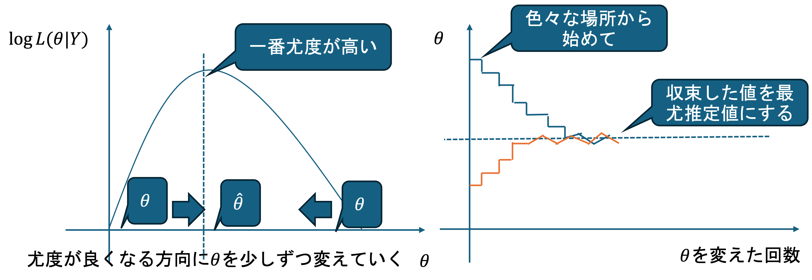
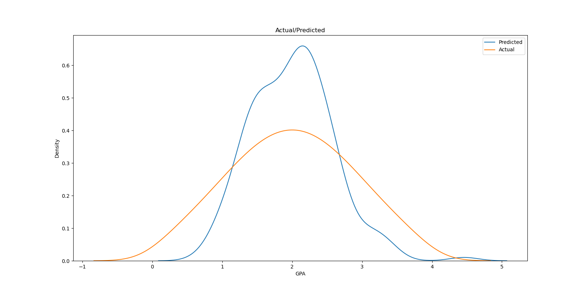
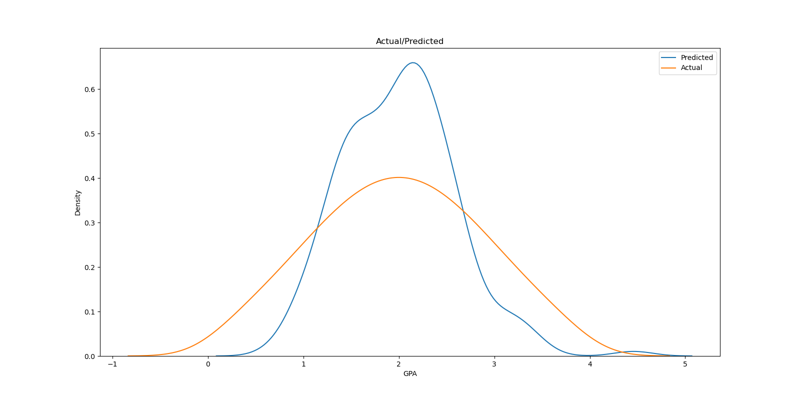
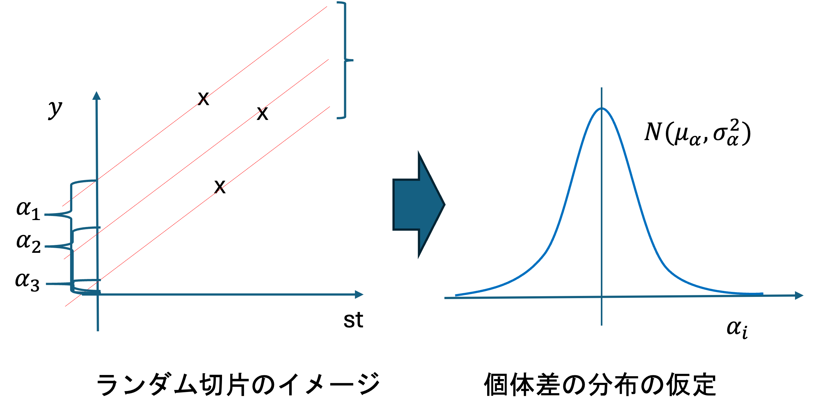
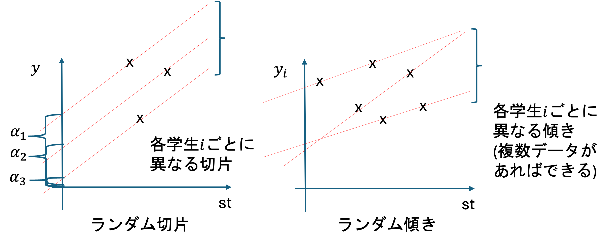
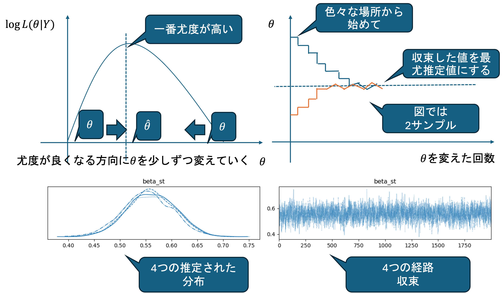
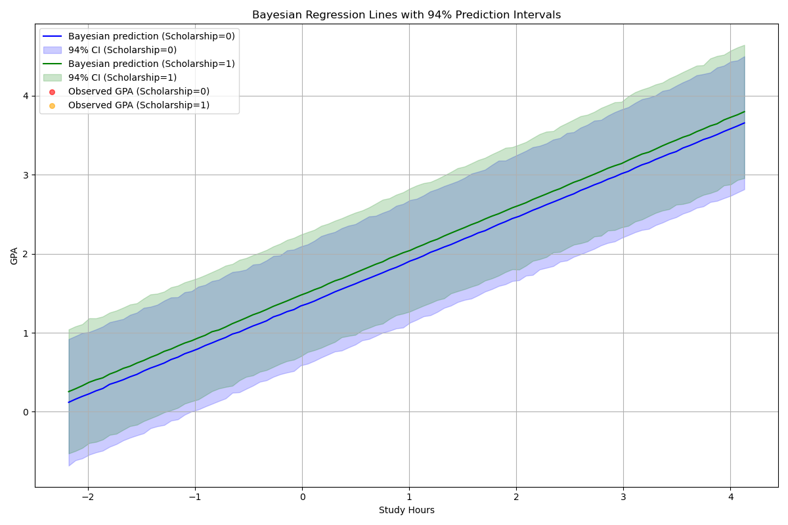
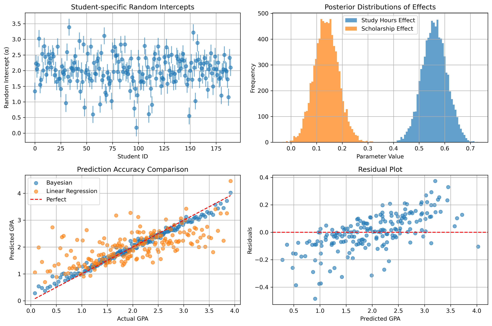

特別講義DS Ch12 一般化線形モデル
1 統計モデリング
前回(Ch11)では線形の重回帰を利用して,ある程度正確な説明/予測が可能となりました. しかし,これが最善のモデルであるとは限りません. また, 線形回帰でうまく表せないからと言って,関係がないと断定することもできません. より正確に説明できるより良いモデルが存在する可能性があります.
前回の事例に即して考えると例えば,
- Scholarshipの有無によって,それぞれの傾きが異なるのでは?
奨学金をもらっている人のほうがそもそも勉強時間あたりのGPAの伸び率が高いなど,層ごとに異なるパラメータを持つ可能性があります.
- 残差の分布が正規分布ではないのでは?
重回帰分析では残差が正規分布であるという仮定のもと分析を行っていますが,そのような検証は行われていません.
基本的にはデータを特定のモデルで表現する場合には,グラフや特徴量などから考えられる幾つかの可能性を考慮・比較検討し,最善のモデルを選択することが必要になります. このような行為をモデル選択/統計モデリングといいます.
Ch 12ではこのような,重回帰分析では扱えないモデリング技法として,ベイズ統計学に基づいた一般化線形モデルに関して学習してみましょう.
2 基礎知識 ベイズ統計学概要
前章までに扱ってきた,統計的仮説検定や回帰分析は無限回試行を行った際に収束する相対度数(客観確率)を確率の定義とする頻度主義に基づいた統計的手法です(詳細は｢統計学入門(データ活用の統計学)｣などに譲ります.) そのような前提にたった統計学を伝統的統計学とも呼びます.
一方で,2000年代初頭から,計算機の性能向上と,MCMCなどのアルゴリズムの開発によって,分析者の情報,知識,経験などによる主観によって定めらる主観確率に基づく確率的定義(ベイズ主義)を前提とした手法が用いられるようになりました.
2.1 ベイズの定理
まずは,ベイズ統計学の中核となるベイズ確率(逆確率),ベイズの定理などの基礎概念の概要を把握しましょう.
ここでは,最低限の記法の意味などについて概要を解説します. これ以前の基本的な確率計算や定義に関しては｢統計学入門｣, ｢データ活用の統計学｣などを, ベイズやアルゴリズムの詳細に関しては｢データサイエンス実践｣｢データ活用の統計学実践｣などの講義を受講して下さい.
ベイズ確率やベイズの定理は,1740年代に数学好きの牧師であったトーマス･ベイズによってまとめられました. ベイズは,神学への興味から,｢世界が原初神によって作られたこと｣を｢現在の事象｣によって証明できるか,という問題に関心を寄せていました. ベイズはこのような問題を解くために, 仮の確率を今現在の情報によって更新し,過去の出来事を推測するというアイデア(逆確率)をまとめました.
しかし,ベイズ自身はこれを発表せず, 1763年にリチャード・プライスによってベイズの遺稿が発表されたことで再注目されました(このことによって近年では,ベイズの定理がベイズ・プライスの定理と呼ばれることもあります.)
古典的確率の定立に貢献したラプラスも同様の観点に注目した時期があり,ベイズの定理から確率的な推論を実施する方法などがまとめられましたが,当時の計算・データ環境などからそれ以上深められることはなく,古典的確率に則った頻度主義や伝統的統計学が発展していきます.
(cf. シャロン・バーチュ マグレイン (著), 異端の統計学 ベイズ, 草思社, 2013)
それでは,逆確率やベイズの定理がどのようなものかを見ていきましょう.
2.1.1 条件付き確率
事象Aの下での事象Bの条件付き確率
P(B|A) = \frac{P(B \cap A)}{P(A)}
を変形した
P(B \cap A) = P(A) P(B | A)
を乗法定理と呼びます.
このとき AとBは対称なので,
P(B \cap A) = P(A \cap B) = P(B) P(A | B)
も成り立ちます.
2.1.2 ベイズの定理
A を得られた結果, H_1,H_2,...,H_k を原因としたとき,事象Aの下での事象H_iの条件付き確率は,
P(H_i | A) = \frac{P(H_i \cap A)}{P(A)}
となります.
ただし, ここで H_i は互いに排反で, \bigcup_{i=1} H_i = \Omega かつ \sum_{i=1} P(H_i) =1
このとき,乗法定理から
P(H_i \cap A) = P(H_i)P(A | H_i)
が求まります. これを代入して,
P(H_i | A) = \frac{P(H_i)P(A | H_i)}{P(A)}
となり,これをベイズの定理といいます.
また,
P(A) = \sum_{i=1}^{k} P(A \cap H_i) = \sum_{i=1}^{k} P(H_i)P(A|H_i)
であるから,
P(H_i |A) = \frac{P(H_i)P(A|H_i)}{\sum_{i=1}^{k} P(H_i)P(A|H_i) }
と表す場合もあります.
このとき, P(H_i)を(Aが起こる)事前確率,P(H_i|A)を(Aが起こる)事後確率といいます. ベイズ統計学ではしばしば事前確率に主観確率が用いられ,これを基礎とする統計的方法をベイズ統計学といいます.
- 客観確率
頻度説では、事象Aの起こる確率P(A)を生起回数の相対頻度で求めています.これは誰が計算しても同一の客観的な値といえます.
- 主観確率
研究者が主観的にある確率を与えて分析を行います. この場合確率は,研究者の経験,情報,知識によって異なる値が用いられます. 当然,主観確率によって結果は異なります. ただし,後に見るように多量のデータによって主観性を減らせる.
- 事前確率と事後確率の意味
事前確率P(H_i)は,データAが観測される前の,仮説H_iに対する(主観的な)確信度を表します. つまり,データを観測する前に,どの仮説が真である可能性が高いかを表す確率です.
事後確率P(H_i|A)は,データAが観測された後の,仮説H_iに対する確信度を表します. つまり,データAが得られたという情報を踏まえた上で,どの仮説が真である可能性が高いかを表す確率です.
ベイズの定理は,事前確率とデータから事後確率を計算する方法を提供します. この過程では,データが得られることで,仮説に対する確信度が更新されます. 例えば,事前確率が低かった仮説でも,データがその仮説を支持するものであれば,事後確率は高くなります. 逆に,事前確率が高かった仮説でも,データがその仮説と矛盾するものであれば,事後確率は低くなります.
条件付き確率の範囲では, ｢原因から結果の確率を計算｣しますが,ベイズの定理では結果から原因を考えています.
2.1.3 条件付き確率
事象Aが起こったと分かっている場合に事象Bの起こる確率
P(B|A) = \frac{P(A \cap B)}{P(A)}
例:選ばれた壺から出るたまの確率を計算
壺に白,赤それぞれ3つの玉が入っている.白玉には1,1,2と数字,赤玉には1,2,2と数字が書かれている. 次に出る玉が白であることがわかっている場合に1の玉がでる確率は?

P(1 | 白) = \frac{白 \cap 1}{P(白)} = \frac{2 / 6}{ 1/ 2} = \frac{2}{3}
𝑃(玉の色|選んだ壺)であり, 𝑃(結果|原因)の計算
2.1.4 ベイズ確率
事象Bが起こったと分かっている場合に,事象Aが起きている確率
P(H_i | A) = \frac{P(H_i)P(A | H_i)}{P(A)}
例. 出た玉から壺が選ばれている確率を計算
2つの壺があり,
第1の壺には白玉が3個,黒玉が1個
第2の壺には白玉が1個,黒玉が２個
𝐻_1:第1の壺から取り出す
𝐻_2:第2の壺から取り出す
A:白玉が出たという事象
とすると,いずれかの壺から玉を1個取り出したところ白玉であった,どちらの壺から取り出した確率が高いか.
まず,どちらの壺から取り出すかは五分五分であると仮定する. ここでこの仮定が完全に分析者の主観に基づくのであれば主観確率であり,何らかの実験等によって確率0.5であると確かめられている場合には客観確率とみなされる.
P(H_1) = P(H_2) = \frac{1}{2}
P(A|H_1) = \frac{3}{4}, \quad P(A|H_2) = \frac{1}{3}
であるから,
P(H_1|A) = \frac{\frac{1}{2} \cdot \frac{3}{4}}{\frac{1}{2} \cdot \frac{3}{4} + \frac{1}{2} \cdot \frac{1}{3}} = \frac{9}{13}
P(H_2|A) = \frac{\frac{1}{2} \cdot \frac{1}{3}}{\frac{1}{2} \cdot \frac{3}{4} + \frac{1}{2} \cdot \frac{1}{3}} = \frac{4}{13}
この｢H_1の壺が選ばれている｣という結果は,壺が選ばれる確率が等しいという主観確率が正しければ正しいと言えます.
この事例で計算されているのは 𝑃(選んだ壺|玉の色) であり, 𝑃(原因|結果)という計算をしていることになります.
このように事例を見てみると, 主観確率を利用した計算は,主観確率の正しさに依存しているためあまり実用性があるようには思えません. そこで重要になってくるのが,ベイズ更新という概念です.
2.2 ベイズ更新
2.2.1 独立性
事象Aの起こる確率が他の事象Bに影響されない場合,事象Aと事象Bは独立であるという.
このとき
P(A) = P(A|B)
が成り立ちます. 乗法定理 P(A \cap B) = P(B)P(A|B) より,
P(A \cap B) = P(A)P(B)
が成り立つ.
例: サイコロを2回投げて連続で1の目が出る確率を考える.
- 事象A: 1回目1が出る
- 事象B: 2回目1が出る
P(A \cap B) = \frac{1}{36}, \quad P(A) \cdot P(B) = \frac{1}{6} \cdot \frac{1}{6} = \frac{1}{36}
なので,事象AとBは独立といえる.
ベイズの目的は,複数のデータを利用して事後確率の推定を更新していくことにあります.
2.2.2 複数の事象からなる条件付き確率
複数の事象A, B, Cがある場合の条件付き確率は以下のように表されます.
P(B \cap C | A) = \frac{P(A \cap B \cap C)}{P(A)}
この式は,乗法定理(積の法則)により以下のように書き換えられます.
\Leftrightarrow P(A \cap B \cap C) = P(B \cap C | A)P(A)
同様に,AがB \cap Cの条件下で起こる確率は以下の通りです.
P(A | B \cap C) = \frac{P(A \cap B \cap C)}{P(B \cap C)}
これも積の法則として以下のように書き換えられます.
\Leftrightarrow P(A \cap B \cap C) = P(A | B \cap C)P(B \cap C)
これらの式を代入して整理すると,以下の関係が得られます.
P(A | B \cap C) = \frac{P(B \cap C | A)P(A)}{P(B \cap C)}
2.2.3 ベイズ更新の適用
原因Hと,現在の状況B, Cがあるとき,事後確率P(H | B \cap C)はベイズの定理により以下のように計算されます.
P(H | B \cap C) = \frac{P(B \cap C | H)P(H)}{P(B \cap C)}
もし事象BとCが独立であれば,条件付き確率P(B \cap C | H)はP(B | H)P(C | H)となり,分母のP(B \cap C)はP(B)P(C)となります. さらに,P(H | C) = \frac{P(C | H)P(H)}{P(C)}の関係を利用すると,上記の式は以下のように変形できます.
P(H | B \cap C) = \frac{P(B | H)P(C | H)P(H)}{P(B)P(C)} = \frac{P(B | H)P(H | C)}{P(B)}
ここで,情報Cによって既に求められた事後確率P(H | C)を新しい事前確率P(H)^*とすると,ベイズ更新の式はより簡潔に表現できます.
P(H | B \cap C) = \frac{P(B | H)P(H)^*}{P(B)}
この方法により,情報が与えられるたびに事後確率を計算し,それを次のデータに対する事前分布として利用することで,分布の推定を逐次的に更新していくことができます.
2.2.4 ベイズ統計学の性質
事前確率に関する情報がなく,P(H)が完全に主観的に決められたとしても,データ (A,B,C, \dots)が大量にある場合は,
P(H|A \cap B \cap C \cap D \dots) = \frac{P(A \cap B \cap C \cap D \dots|H) P(H)}{P(A \cap B \cap C \cap D \dots)}
以下のように段階的に更新を実施することができます.
まず,データAが得られたとき:
P(H|A) = \frac{P(A|H)P(H)}{P(A)}
次に,データBが得られたとき,前の事後確率P(H|A) = \frac{P(A|H)P(H)}{P(A)} = P(H)^* を新しい事前確率として利用:
P(H|A \cap B) = \frac{P(B|H)P(H|A)}{P(B)} = \frac{P(B|H)P(H)^*}{P(B)}
さらに,データCが得られたとき,前の事後確率P(H|A \cap B) = P(H)^{**}を新しい事前確率として利用:
P(H|A \cap B \cap C) = \frac{P(C|H)P(H)^{**}}{P(C)}
このように,データD, E, \dotsが得られるたびに,前の事後確率を事前確率として利用して更新を続けていきます. データ( A,B,C,D, \dots )を大量に集めれば,最初に設定した事前確率P(H)の影響が少なくなり,事後確率 P(H|A \cap B \cap C \cap D \dots)が安定することが知られています.
この性質は,ベイズ的一致性(Bayesian consistency)と呼ばれます. 具体的には以下のような性質が成り立ちます:
一致性: データが増えるにつれて,事後確率分布は真のパラメータ値に収束します. つまり,サンプルサイズが無限大に近づくと,事後確率は真の値に集中していきます.
事後確率の安定性: 異なる事前分布から出発しても,データが十分に多ければ,最終的な事後分布はほぼ同じ結果になります. これは,データが増えるにつれて,尤度関数P(A \cap B \cap C \cap D \dots|H)の影響が事前確率P(H)の影響を上回るためです.
事前確率の影響の減少: データが少ないときは事前確率P(H)の選択が結果に大きく影響しますが,データが増えるにつれて,その影響は相対的に小さくなります. 最終的には,データの情報が支配的になり,事前確率の選択が結果に与える影響は限定的になります.
しかし,このような更新には大量のデータが必要であることに加えて,データごとに分布を推定し直すには膨大な計算が必要となるため, ラプラスらの時代には現実的ではありませんでした.
現代では, 情報通信技術の発展によって大量のデータと,大量の計算が可能になりました.また,計算のためのアルゴリズム(マルコフ連鎖モンテカルロ法など)が発明されたことで,ベイズ更新に基づく推定が現実的な選択肢となりベイズ統計学が利用されるようになっています.
2.3 マルコフ連鎖モンテカルロ法
2.3.1 尤度(Likelihood)
尤度とは,モデルのデータへの当てはまりの良さを表す統計量です.
- \thetaを母数とする確率分布から観測データy_iが発生した場合,その確率はP(y_i|\theta)と表されます.
- 尤度L(\theta|Y)は,観測されたデータY = \{y_1, y_2, \dots, y_n\}が与えられたときの,特定のパラメータ\thetaの「もっともらしさ」を示す関数で,以下のように定義されます.
L(\theta|Y) = \prod_{i} P(y_i|\theta)
尤度はそのままでは計算しにくい場合が多いため,対数化した対数尤度を用いることが一般的です.
\log L(\theta|Y) = \sum_{i} \log P(y_i|\theta)
前段で説明したベイズ更新と尤度には密接な関係があります.
ベイズの定理は以下のように表されました:
P(H|A) = \frac{P(A|H)P(H)}{P(A)}
この式において,P(A|H)は「仮説Hが真であるときにデータAが観測される確率」であり,これは尤度関数に対応します.
一般的な尤度の説明ではパラメータを\thetaで表しましたが,ベイズ統計学では仮説Hをパラメータとみなすことができます. 複数のデータY = \{y_1, y_2, \dots, y_n\}が得られた場合,ベイズの定理は以下のようになります:
P(H|Y) = \frac{P(Y|H)P(H)}{P(Y)} = \frac{L(H|Y)P(H)}{P(Y)}
ここで,P(Y|H) = \prod_{i} P(y_i|H)は尤度関数L(H|Y) = \prod_{i} P(y_i|H)と一致します. したがって,ベイズの定理は尤度関数を用いて以下のように表現できます:
P(H|Y) \propto L(H|Y)P(H)
つまり,事後確率は「尤度×事前確率」に比例します. この関係から以下のことがわかります:
- 尤度L(H|Y)が大きいほど,その仮説Hの事後確率P(H|Y)も大きくなります.
- データが増えるにつれて,尤度関数の影響が事前確率の影響を上回り,事後確率が安定していきます.
- ベイズ更新では,新しいデータが得られるたびに尤度関数を計算し,それと事前確率を組み合わせて事後確率を更新していきます.
2.3.2 最尤推定 (Maximum Likelihood Estimation)
この対数尤度を最大にするようなパラメータの推定量\hat{\theta}を推定することを最尤推定といいます.
\hat{\theta}は数理的に求めることが可能な場合もありますが,モデルが複雑な場合は困難なので機械的に求めることが多く,その手法の代表的なものがマルコフ連鎖モンテカルロ法(MCMC)です.
2.3.3 マルコフ連鎖モンテカルロ法 MCMC(Markov chain Monte Carlo Method)
前段で説明したベイズ統計学において,事後確率P(H|Y) \propto L(H|Y)P(H)を計算するには,分母の正規化定数P(Y)を求める必要があります. しかし,モデルが複雑な場合やパラメータが多変数の場合,この正規化定数の計算は解析的に困難です. また,最尤推定においても,解析的に最尤推定量\hat{\theta}が求められない(難しい)場合があります.
このような場合に用いられるのが,計算機による繰り返し計算で少しずつパラメータの値を変化させ,最適な値を探し出す方法であるマルコフ連鎖モンテカルロ法(MCMC)です.
- MCMCの基本的な仕組み
MCMCは以下のような手順で動作します:
初期値の設定: 複数の初期値\thetaを適当に決めます.
ランダムな探索: ランダムに\thetaを少し増減させます.
尤度の評価: 新しい\thetaの値での尤度を計算し,前の値と比較します.
移動の決定: 尤度が改善したら,\thetaをその方向にして次のステップに進みます. ただし,メトロポリス法などの手法では,たまに尤度が悪くなっても一定の確率でそちらに進むことで,局所最適解に陥ることを防ぎます.
繰り返し: この過程を繰り返すことで,パラメータ空間を探索し,最尤推定量や事後分布のサンプルを生成します.

MCMCにより,ベイズ統計学における複雑な事後分布の推定や,最尤推定における困難な最適化問題を,計算機上で効率的に解決できるようになりました.
3 ベイズ統計学による統計モデリング実践
それでは,実際にベイズ統計学に基づいた統計モデリングを実施してみましょう. 前章で重回帰で実施したものと良く似たこちらのデータを事例として利用します.
| GPA | Scholarship | Study_Hours | Sports_hours | Part_time_Work | StudentID |
|---|---|---|---|---|---|
| 1.348928 | True | 10.348188 | 5.398119 | 14.944201 | 0 |
| 1.968662 | False | 8.803971 | 3.799566 | 15.340118 | 1 |
| 2.246881 | True | 10.367043 | 5.139604 | 19.937536 | 2 |
| 1.167275 | True | 2.049724 | 4.229373 | 21.009315 | 3 |
| 3.295929 | True | 9.121312 | 5.227035 | 14.271377 | 4 |
| … | … | … | … | … | … |
| 0.974230 | False | 4.256551 | 0.396158 | 13.299289 | 185 |
| 2.208293 | False | 14.652655 | 1.969618 | 10.523032 | 186 |
| 0.786660 | False | 10.040932 | 7.733749 | 13.232559 | 187 |
| 2.068987 | True | 6.073965 | 8.289935 | 13.540597 | 188 |
| 2.531604 | True | 11.848414 | 4.501928 | 11.335318 | 189 |
各自でダウンロードして利用して下さい.
3.1 重回帰での結果確認
まずは,データの読み込みを行います. 必要なライブラリは各自で pip installしてください.
import matplotlib.pyplot as plt
import numpy as np
import pandas as pd
import matplotlib.pyplot as plt
import seaborn as sns
import statsmodels.api as sm
from sklearn.metrics import mean_squared_error, r2_score, mean_absolute_error
df = pd.read_csv('hierarchical_regression.csv'
,dtype={'GPA': float
,'Scholarship': bool
,'Study_Hours': float
,'Sports_hours': float
,'Part_time_Work': float
,'StudentID':int})
print(df)
"""
GPA Scholarship Study_Hours Sports_hours Part_time_Work StudentID
0 1.348928 True 10.348188 5.398119 14.944201 0
1 1.968662 False 8.803971 3.799566 15.340118 1
2 2.246881 True 10.367043 5.139604 19.937536 2
3 1.167275 True 2.049724 4.229373 21.009315 3
4 3.295929 True 9.121312 5.227035 14.271377 4
.. ... ... ... ... ... ...
185 0.974230 False 4.256551 0.396158 13.299289 185
186 2.208293 False 14.652655 1.969618 10.523032 186
187 0.786660 False 10.040932 7.733749 13.232559 187
188 2.068987 True 6.073965 8.289935 13.540597 188
189 2.531604 True 11.848414 4.501928 11.335318 189
"""まずはデータを可視化してみます.
# ペアプロット
sns.pairplot(df
,vars=["GPA", "Study_Hours", "Sports_hours", "Part_time_Work"]
,hue="Scholarship"
,diag_kind="hist")
plt.suptitle("Pairplot with Scholarship", y=1.02)
plt.savefig('PairplotwithScholarship.png')
plt.close()
#joinplotで男女別に密度プロットを表示
fig = sns.jointplot(df
,x ="Study_Hours"
,y ="GPA"
,hue='Scholarship'
,joint_kws = dict(alpha=0.5))
plt.savefig('kde.png')
plt.close()
以前のデータと概ね似た傾向(奨学金ありが少し高い,勉強時間とGPAに相関,勉強時間とバイト時間に負の相関など,)が確認できます. ただし,前回のデータと比べるとデータ全体のばらつきが大きいことが分かります.

前回と同様の手法で,線形重回帰の実施と結果の確認を行います.
# 数量化
df = pd.get_dummies(df, columns=['Scholarship'], dtype='int')
#標準化
from sklearn.preprocessing import StandardScaler
scaler = StandardScaler()
df[['Scholarship_True'
,'Study_Hours'
,'Part_time_Work'
,'Sports_hours']] = scaler.fit_transform(df[['Scholarship_True'
,'Study_Hours'
,'Part_time_Work'
,'Sports_hours']])
#線形回帰
# 説明変数(X)と目的変数(y)に分割
X = df[['Scholarship_True', 'Study_Hours']]
y = df['GPA']
# 切片(定数項)を追加
X = sm.add_constant(X)
lm = sm.OLS(y, X).fit()
print("\n[通常の線形回帰の結果]\n")
print(lm.summary())
lm_preds = lm.predict(X)
plt.figure(figsize=(8, 6))
plt.scatter(df['GPA'], lm_preds, alpha=0.7, edgecolors="k")
plt.xlabel("Predicted")
plt.ylabel("Actual")
plt.title("Actual vs. Predicted")
plt.plot([df['GPA'].min(), df['GPA'].max()], [df['GPA'].min(), df['GPA'].max()], color="red", linestyle="--") # 完全一致のライン
plt.grid()
plt.savefig('lm.png')
plt.close()
plt.figure(figsize=(16,8))
sns.kdeplot(lm_preds, label = 'Predicted')
sns.kdeplot(df['GPA'], label = 'Actual')
plt.title('Actual/Predicted')
plt.xlabel('GPA')
plt.ylabel('Density')
plt.legend()
plt.savefig('lm_kde.png')
plt.close()
"""
OLS Regression Results
==============================================================================
Dep. Variable: GPA R-squared: 0.444
Model: OLS Adj. R-squared: 0.438
Method: Least Squares F-statistic: 74.76
Date: Tue, 04 Nov 2025 Prob (F-statistic): 1.38e-24
Time: 16:50:17 Log-Likelihood: -187.55
No. Observations: 190 AIC: 381.1
Df Residuals: 187 BIC: 390.8
Df Model: 2
Covariance Type: nonrobust
====================================================================================
coef std err t P>|t| [0.025 0.975]
------------------------------------------------------------------------------------
const 2.0000 0.047 42.122 0.000 1.906 2.094
Scholarship_True 0.1385 0.047 2.917 0.004 0.045 0.232
Study_Hours 0.5620 0.047 11.835 0.000 0.468 0.656
==============================================================================
Omnibus: 11.718 Durbin-Watson: 1.974
Prob(Omnibus): 0.003 Jarque-Bera (JB): 14.133
Skew: -0.457 Prob(JB): 0.000853
Kurtosis: 3.975 Cond. No. 1.01
==============================================================================
"""全般的に有意ではあるものの,精度がそれほど高くありません.
 

グラフを見てみると, 元のデータは予測値に対して分散が大きくデータの分散を予測モデルが説明しきれていないことが分かります. R2を確認しても,データに含まれている変数では全体の変動のうち44%ほどしか説明できていません.
3.2 過分散と個別差
このように,観察データの分散が,モデルの予測から逸脱しており,モデルではデータの分散が説明できていない状態を過分散といいます.
モデルの説明力を上げるためには,このようなモデルによって説明できていないばらつきを説明する拡張が必要となります.
ここでは,｢データ(の観測対象)=学生｣なので,｢ばらつき=学生差｣と仮定してみます. 例えば,そもそも過去の学習経験,勉強環境などにより,ベースとなる学力が学生それぞれで異なるなど,学生差によるばらつきを表現するために線形モデルを拡張した一般化線形モデルを構築してみましょう.
3.3 一般化線形モデル(GLM)
一般化線形モデル(Generalized Linear Model, GLM)は,線形回帰分析を一般化した統計モデルです. 線形回帰分析では以下の式における
Y_i = \beta_0 + \beta_1 X_i + \epsilon_i \quad (i=1,2,\dots,n)
誤差項 \epsilon_i のみが正規分布に従うと仮定して分析を実施していました.
\epsilon_i \sim N(0, \sigma^2)
これに対し,一般化線形モデルは以下の3つの要素から構成されます:
- 確率分布: 目的変数y_iが従う確率分布(正規分布,ポアソン分布,二項分布など)
- 線形予測子: 説明変数の線形結合\eta_i = \beta_0 + \beta_1 X_{1i} + \beta_2 X_{2i} + \cdots
- リンク関数: 目的変数の期待値E[y_i]と線形予測子\eta_iを結び付ける関数g(E[y_i]) = \eta_i
線形回帰は,一般化線形モデルの特殊ケース(正規分布 + 恒等リンク関数)として捉えることができます. 一般化線形モデルにより,正規分布以外の分布や,非線形な関係もモデル化できるようになります.
ベイズ統計学のモデルにおいて最尤推定する対象は, モデルの母数 \thetaであり, データがどのような分布であるかを観察し,それを再現するモデルを構築します.
そこで,今回の目的変数であるGPAの分布を確認してみましょう.
plt.figure(figsize=(8, 5))
sns.kdeplot(df["GPA"], fill=True, bw_adjust=0.5)
plt.title("Kernel Density Estimate of GPA")
plt.xlabel("GPA")
plt.ylabel("Density")
plt.grid(True)
plt.savefig('kde-gpa.png')
plt.close()
カーネル密度プロットの結果から,今回のデータは正規分布していると仮定して問題なさそうです.
y_i \sim N(\mu_i, \sigma^2)
ここで,今回は正規分布の母数である平均 \mu を推定する目的としてみます.
モデルの設計では分散 \sigma を推定の目的とすることも可能ですが,単純化のために固定とします. 今回は説明用の単純なモデルですが,必要に応じてより複雑なモデルを資料に追加していきます.
このとき,説明変数としてgpaに影響するもの配下のように仮定します.
- S_t (Study Hours): 勉強時間
- S_s (Scholarship): 奨学金
- \alpha_i: 学生個別のもともとの学力（ランダム切片）
これらの変数を用いて, \mu を表す式を以下のように立てます.
\mu_i = \alpha_i + \beta_{st} \cdot S_t + \beta_{ss} \cdot S_s
このような式を,線形予測子(linear predictor)といいます.
線形予測子は,説明変数とパラメータの線形結合で構成される式です.
一般化線形モデル(GLM)では,線形予測子\eta_iと目的変数の期待値E[y_i]をリンク関数g(\cdot)で結び付けます:
g(E[y_i]) = \eta_i = \alpha_i + \beta_{st} \cdot S_t + \beta_{ss} \cdot S_s
今回は正規分布を仮定しているため,恒等リンク関数(identity link function) g(x) = x を使用します. 恒等リンク関数では,
g(E[y_i]) = E[y_i] = \mu_i = \eta_i
となり,\mu_i = E[y_i] = \eta_iという関係が成り立ちます. これにより,線形回帰と同じ形式になります.
他の分布では,例えば:
- ポアソン分布: 対数リンク関数 g(E[y_i]) = \log(E[y_i]) = \eta_i
- 二項分布: ロジットリンク関数 g(E[y_i]) = \log\left(\frac{E[y_i]}{1-E[y_i]}\right) = \eta_i
などが用いられます.
今回は線形モデルとの接続のために,正規分布を仮定していますが,そもそもデータが正規分布では説明できないことが明らかな場合には,適した分布を選択することでモデルの精度が格段に上がります.
ここで,解くべき問題は,
E[y_i] = \mu_i = \alpha_i + \beta_{st} \cdot S_t + \beta_{ss} \cdot S_s
となるような\alpha_i, \beta_{st}, \beta_{ss}を推定することです.
3.4 個体差のモデリング
恒等リンク関数を用いたモデリングでは,線形回帰と同じ形式の式となりますが, 一般化線形モデルでは全体の分布を仮定しているため個体差をモデルに取り組むことが可能となります.
3.4.1 線形回帰での問題
個体差をモデルに取り込もうとする場合,線形回帰では以下のような問題が発生します:
ダミー変数の導入: 各学生の個別の学力を推定するために,学生ごとにダミー変数を導入する方法が考えられます.
データ数が少ない場合の問題: 各学生毎にデータ数が少ない場合(今回は1人1データ),各ダミー変数は誤差と等しくなってしまいます.
過学習の問題: 結果として,データ = 予測値 (\hat{y}_i = y_i) としているのと変わらなくなります. これは推定の意味がなく,過学習を起こしている状態です.
3.4.2 ベイズ推論による解決
ベイズ統計学では,この問題を以下のように解決します:
階層構造の導入: 各学生の学力\alpha_iに対して,事前分布として正規分布\alpha_i \sim N(\mu_{\alpha}, \sigma_{\alpha}^2)を設定します. これにより,階層ベイズモデル(hierarchical Bayesian model)またはランダム効果モデル(random effects model)を構築します.
分布の母数を推定: 推定するのは個別の学力\alpha_iではなく,その分布の母数(\mu_{\alpha}, \sigma_{\alpha})です. これにより,データ数が少なくても,全体の分布から情報を借用(borrowing strength, 情報の共有)して推定を行うことができます. 各学生のデータが少なくても,他の学生のデータと組み合わせることで,より安定した推定が可能になります.
新しいデータへの対応: 分布の母数(\mu_{\alpha}, \sigma_{\alpha})が推定されているため,新しい学生のデータが得られた場合でも,推定された分布N(\mu_{\alpha}, \sigma_{\alpha}^2)に基づいて学力を推定することが可能になります. これにより,汎化性能の高いモデルを構築できます.

それでは実際に,モデルを構築してみましょう.
3.4.3 モデルの仮定
階層ベイズモデルでは,仮説に従って以下のように分布を設定します.
- 仮説: 基礎学力は学生によって異なる
- 個別に異なる\alpha_i
- 仮定: 基礎学力は正規分布に従う
- \alpha_i \sim N(\mu_{\alpha}, \sigma_{\alpha}^2)
- これを事前分布(prior distribution)といいます.
- 更にそれぞれの母数の分布を仮定する
- \mu_{\alpha} \sim N(0, 1)
- \sigma_{\alpha} \sim HN(1)
- ここで,HNは半正規分布(Half-Normal distribution)を表します.

このように,パラメータの分布のパラメータ(超パラメータ)についても分布を仮定することで,階層的な構造を持つベイズモデルを構築します. これは階層事前分布(hierarchical prior)と呼ばれます.
3.4.4 ランダム傾きとランダム切片
これまで,学生の基礎学力の違い(ランダム切片\alpha_i)について考えてきましたが,他にも個体差として考慮できる要素があります.
- 仮説: 勉強時間による効果は人によって違う
ただし,学生個別の個体差\alpha_i(ランダム切片)のように,学生個別の勉強時間あたりのGPAの上昇率\beta_{st,i} \cdot S_tという推定は,今回のデータではモデル化できません.
このような個別の傾きをランダム傾き(random slope)といいます.
3.4.4.1 なぜモデル化できないのか?
学生1人につき1つしかデータがない: 今回のデータでは,各学生について1つの観測値しかありません.
切片はそれぞれの値から推定できる: 切片\alpha_iは,以下のように各学生のデータから直接推定できます: \alpha_i = y_i - \beta_{st} \cdot S_t - \beta_{ss} \cdot S_s
傾きは複数の観測点が必要: 傾きは「変化の傾向(勾配)」なので,推定には複数の観測点が必要です. 傾き\beta_{st,i}を推定するには,少なくとも2点以上のデータが必要で,以下のように計算されます: \beta_{st,i} = \frac{y_i - y_j}{S_{t,i} - S_{t,j}}
そのため,1人1データしかない今回のケースでは,学生ごとのランダム傾きを推定することはできません. ランダム傾きをモデル化するには,各学生について複数の時点でのデータ(縦断データ)が必要になります.

したがって今回は,学生個別の学習能力は全体で同一(固定効果)として扱います. また,奨学金についても同様に学生ごとの差は無いものとして扱います(ランダム傾きモデルに関しては,今後学生の需要があれば資料に追加します.)
3.5 モデル全体像
これまで説明してきた内容を整理すると,以下のような階層ベイズモデルになります:
3.5.1 推定する分布
y_i \sim N(\mu_i, \sigma^2)
ここで,y_iは学生iのGPAです. 誤差の標準偏差\sigmaは,今回は固定値\sigma = 0.3として扱います.
3.5.2 線形予測子
\mu_i = \alpha_i + \beta_{st} \cdot S_t + \beta_{ss} \cdot S_s
ここで:
- S_tは勉強時間(Study Hours)
- S_sは奨学金受給の有無(Scholarship, 0または1)
- \alpha_iは学生iの基礎学力(ランダム切片)
- \beta_{st}は勉強時間の効果(固定効果)
- \beta_{ss}は奨学金の効果(固定効果)
3.5.3 尤度関数
p(y | \alpha, \beta_{st}, \beta_{ss}, \sigma) = \prod_{i=1}^{N} N(y_i | \mu_i, \sigma^2)
ここで,\mu_i = \alpha_i + \beta_{st} \cdot S_t + \beta_{ss} \cdot S_sです.
3.5.4 事前分布
3.5.4.1 ランダム切片(階層構造)
\alpha_i \sim N(\mu_{\alpha}, \sigma_{\alpha}^2): 学生個別の基礎学力(ランダム切片)
これは非中心パラメータ化により以下のように表現されます:
z_{\alpha,i} \sim N(0, 1) \alpha_i = \mu_{\alpha} + \sigma_{\alpha} \cdot z_{\alpha,i}
- 非中心パラメータ化(non-centered parameterization)
階層ベイズモデルにおいて,ランダム切片\alpha_iを表現する方法には2通りあります:
中心パラメータ化(centered parameterization): \alpha_i \sim N(\mu_{\alpha}, \sigma_{\alpha}^2) これは,直接\alpha_iを平均\mu_{\alpha}と標準偏差\sigma_{\alpha}を持つ正規分布から生成する方法です.
非中心パラメータ化(non-centered parameterization): z_{\alpha,i} \sim N(0, 1) \alpha_i = \mu_{\alpha} + \sigma_{\alpha} \cdot z_{\alpha,i} これは,標準正規分布N(0, 1)からz_{\alpha,i}を生成し,それを線形変換して\alpha_iを生成する方法です.
数学的には,両者は同じ分布\alpha_i \sim N(\mu_{\alpha}, \sigma_{\alpha}^2)を生成しますが,MCMCサンプリングにおける挙動が大きく異なります.
MCMCサンプリングにおける効果:
非中心パラメータ化は,以下の理由からMCMCサンプリングの効率を大幅に向上させます:
パラメータ間の相関の低減: 中心パラメータ化では,\alpha_iと(\mu_{\alpha}, \sigma_{\alpha})の間に強い相関が生じます. 特に,\sigma_{\alpha}が小さい場合,\alpha_iの値は\mu_{\alpha}に近くなり,パラメータ空間の探索が困難になります. 非中心パラメータ化では,z_{\alpha,i}は標準正規分布から独立に生成されるため,パラメータ間の相関が低減され,効率的な探索が可能になります.
ファネル形状の問題の回避: 階層モデルでは,パラメータ空間が「ファネル(funnel)」形状になることがあります. \sigma_{\alpha}が小さい領域では,許容される\alpha_iの範囲が狭くなり,サンプリングが困難になります. 非中心パラメータ化により,この問題を回避できます.
収束の改善: パラメータ間の相関が低減されることで,マルコフ連鎖がより速く混合し,収束が改善されます. 特に,階層モデルでは,非中心パラメータ化を使用することで,発散(divergence)の発生を大幅に減らすことができます.
ESS(Effective Sample Size)の向上: パラメータ間の相関が低減されることで,サンプル間の自己相関が減少し,実質的なサンプルサイズ(ESS)が向上します. これにより,より少ないサンプル数で,より信頼性の高い推定が可能になります.
ただし,すべての場合に非中心パラメータ化が最適というわけではありません. データが十分に多い場合や,\sigma_{\alpha}が大きい場合には,中心パラメータ化でも問題なく動作することがあります. しかし,一般的には,階層モデルでは非中心パラメータ化を使用することが推奨されます.
3.5.4.2 固定効果
- \beta_{st} \sim N(0, 1): 勉強時間の効果(固定効果, 学生間で同じ値)
- \beta_{ss} \sim N(0, 1): 奨学金の効果(固定効果, 学生間で同じ値)
3.5.5 超事前分布
- \mu_{\alpha} \sim N(0, 1): ランダム切片の平均
- \sigma_{\alpha} \sim HN(1): ランダム切片の標準偏差(半正規分布)
以下は後述のコードから生成されるモデル全体像を表す図です.

このモデルにより,学生間の基礎学力の個体差を考慮しながら(ランダム切片),勉強時間と奨学金がGPAに与える影響を固定効果として推定することができます.
4 環境構築
それでは,実際にプログラム上でこのモデルを構築,推定してみましょう.
Pythonにおいてベイズ統計学に基づいた統計モデリングを実施するためのライブラリとしてPyMC5があります(古いVersionとしてPyMC3があり全く異なる記法などを用いているので注意して下さい). こちらのライブラリは,Pythonのパッケージマネージャーであるanacondaを利用します.
通常これまでに利用してきたpipによる環境とanaconda環境の併用は困難です. ただし,この講義では,pyenvを環境構築に利用していますので, PyMCを利用するためのディレクトリのlocal環境にのみanaconda用の環境を構築することが可能です.
まずは,ターミナルでPyMCを実行する用のディレクトリを作成し,そこに移動して下さい.
以下, 移動したディレクトリ内にanaconda環境を構築していきます.
4.1 anacondaのインストール
MacOSの方は pyenv install -l でanaconda系統の環境が表示されるので pyenv install anacondaXXX でインストール可能です.
執筆時点の最新版 anaconda3-2024.10-1はPyMC5が対応していないため,anaconda3-2024.02-1が推奨されます.
Windowsの場合は pyenv でのインストールが提供されていないので,手動でインストールする必要があります.
anacondaの公式ページに行き,Get Startedから指示に従ってアカウント等を作成して下さい.

続いて, Windows版のanacondaのインストーラーをダウンロードします.

ダウンロードが完了したら,インストーラーをダブルクリックして起動します.
設定は変更せずNextをクリックしていきます.


インストール先の設定画面が出たら, pyenvのversionsフォルダに保存します.
パスを以下のように指定して次に進みましょう
C:\Users\xxx\.pyenv\pyenv-win\versions\anaconda
(XXXの部分を自分のユーザー名にしましょう.)

その後は基本的にデフォルトの設定のまま,Next,Finishを押しましょう.


インストールが完了したら,ターミナルを開き作業用フォルダに移動して,pyenv versions コマンドでanacondaがインストールされているか確認しましょう.

ローカル環境にanacondaを指定します.
pyenv local anaconda
pyenv rehashanacondaではpipではなくcondaを利用してライブラリをインストールします. まずは,anaconda自体をupdateしましょう.
conda update -n base -c defaults condaProceed ([y]/n)? yが表示されたら, y を押してEnterします.
続いてPyMC5の公式サイトに従い,anaconda上でPyMC5をインストールします.
pyenvが既に仮想環境ですが,conda createコマンドによって pymcなどがインストールされたpythonの仮想環境を更に構築します.
conda create -c conda-forge -n pymc_env "pymc>=5"入力後完了したら,仮想環境を有効化するためにterminalを一度初期化します.
conda init powershellMacOSの場合は, conda init zsh コマンドです.
を入力し, Terminalを閉じて再度作業ディレクトリに移動したあとに仮想環境を有効化する以下のコマンドを入力して下さい.
conda activate pymc_envMacの場合は, このあと仮想環境をlocalに指定します.
pyenv versions
system
3.12.3
* anaconda3-2024.02-1
anaconda3-2024.02-1/envs/pymc_env
❯ pyenv local anaconda3-2024.02-1/envs/pymc_env
❯ pyenv local
anaconda3-2024.02-1/envs/pymc_env環境の確認をします.
Get-Command pythonMacOSの場合は, witch python コマンドです.
以下のようにpymc_env内のpythonが表示されれば利用可能な状況になっています.
CommandType Name Version Source
----------- ---- ------- ------
Application python.exe 3.11.14... C:\Users\akagi\.pyenv\pyenv-win\versions\anaconda\envs\pymc_env\python.exe必要なライブラリをインストールします.
conda install seaborn scikit-learn statsmodels
conda install -c conda-forge compilers途中で,Proceed ([y]/n)? と表示されたらyと入力してENTERを押します.
Preparing transaction: done
Verifying transaction: done
Executing transaction: doneなどが表示されれば,環境構築完了です.
以降,Terminalで作業ディレクトリに移動した後conda activate pymc_env でこの環境が利用できるようになります.
5 PyMC 実装
コードが複雑になるため,先にコードの全体像を示した後, 個別に意味を解説します. まずは,以下のコードを作業ディレクトリに配置した後,実行してみましょう.
最初の画像の保存先やデータの参照先は,環境に応じて変えて下さい.
save_dir = '/images/slds/ch12/'
import pymc as pm
import numpy as np
import pandas as pd
import matplotlib.pyplot as plt
import seaborn as sns
import arviz as az
import graphviz
from pymc import model_to_graphviz
import statsmodels.api as sm
from sklearn.metrics import mean_squared_error, r2_score, mean_absolute_error
from scipy.stats import norm, rankdata
save_dir = '../../images/slds/ch12/'
if __name__ == "__main__":
# ---------------------------
# 1. データ読み込み
# ---------------------------
df = pd.read_csv('hierarchical_regression.csv'
,dtype={'GPA': float
,'Scholarship': bool
,'Study_Hours': float
,'Sports_hours': float
,'Part_time_Work': float
,'StudentID':int})
# 数量化
df = pd.get_dummies(df, columns=['Scholarship'], dtype='int')
#標準化
from sklearn.preprocessing import StandardScaler
scaler = StandardScaler()
df[['Scholarship_True'
,'Study_Hours'
,'Part_time_Work'
,'Sports_hours']] = scaler.fit_transform(df[['Scholarship_True'
,'Study_Hours'
,'Part_time_Work'
,'Sports_hours']])
# ---------------------------
# ２. 線形回帰
# ---------------------------
# 説明変数(X)と目的変数(y)に分割
X = df[['Scholarship_True', 'Study_Hours']]
y = df['GPA']
# 切片(定数項)を追加
X = sm.add_constant(X)
lm = sm.OLS(y, X).fit()
print("\n[通常の線形回帰の結果]\n")
print(lm.summary())
lm_preds = lm.predict(X)
plt.figure(figsize=(8, 6))
plt.scatter(df['GPA'], lm_preds, alpha=0.7, edgecolors="k")
plt.xlabel("Predicted")
plt.ylabel("Actual")
plt.title("Actual vs. Predicted")
plt.plot([df['GPA'].min(), df['GPA'].max()], [df['GPA'].min(), df['GPA'].max()], color="red", linestyle="--") # 完全一致のライン
plt.grid()
plt.savefig(save_dir + 'lm.png')
plt.close()
plt.figure(figsize=(16,8))
sns.kdeplot(lm_preds, label = 'Predicted')
sns.kdeplot(df['GPA'], label = 'Actual')
plt.title('Actual/Predicted')
plt.xlabel('GPA')
plt.ylabel('Density')
plt.legend()
plt.savefig(save_dir + 'lm_kde.png')
plt.close()
# ---------------------------
# ３. 一般化線形モデル
# ---------------------------
coords = {
"student": df["StudentID"].values,
"obs_id": np.arange(len(df))
}
with pm.Model(coords=coords) as model:
st = pm.Data("st", df["Study_Hours"])
#ptw = pm.Data("ptw", df["Part_time_Work"])
ss = pm.Data("ss", df["Scholarship_True"])
student_idx = pm.Data("student_idx", df["StudentID"])
#ランダム切片
z_alpha = pm.Normal("z_alpha", 0, 1, dims="student")
mu_alpha = pm.Normal("mu_alpha", 0, 1)
sigma_alpha = pm.HalfNormal("sigma_alpha", 1)
alpha = pm.Deterministic("alpha", mu_alpha + sigma_alpha * z_alpha, dims="student")
# 勉強時間の効果
beta_st = pm.Normal("beta_st",0,1)
# 奨学金の効果
beta_ss = pm.Normal("beta_ss",0,1)
mu = alpha[student_idx] + beta_st * st + beta_ss * ss
#sigma = pm.HalfNormal("sigma", 1)
sigma = 0.3
gpa_obs = pm.Normal("GPA",
mu=mu,
sigma=sigma,
observed=df["GPA"],
dims="obs_id"
)
trace = pm.sample(draws =2000, tune=2000, chains=4, target_accept=0.95, return_inferencedata=True)
posterior_predictive = pm.sample_posterior_predictive(trace)
# ---------------------------
# 4. モデル診断と可視化
# ---------------------------
graph = model_to_graphviz(model)
graph.render(filename= save_dir + "hierarchical_bayes_model", format="pdf")
az.plot_trace(trace
,var_names=["sigma_alpha"
,"alpha"
,"beta_st"
,"beta_ss"])
plt.tight_layout()
plt.savefig(save_dir + 'trace.png')
plt.close()
print(az.summary(trace
,var_names=["sigma_alpha"
,"alpha"
,"beta_st"
,"beta_ss"]))
summary_df = az.summary(trace
,var_names=["sigma_alpha"
,"alpha"
,"beta_st"
,"beta_ss"])
summary_df.to_csv("bayesian_summary.csv"
,encoding="utf-8-sig")
# ---------------------------
# 6. 階層ベイズモデルによる予測精度評価
# ---------------------------
idata = trace.copy()
idata.extend(posterior_predictive)
az.plot_ppc(idata, data_pairs={"GPA": "GPA"})
plt.savefig(save_dir + 'ppc.png')
plt.close()
#------------------------------------------------------------------
# 予測値の可視化
#------------------------------------------------------------------
posterior_mean = idata.posterior_predictive["GPA"].mean(dim=("chain", "draw")).values
bayes_rmse = mean_squared_error(df["GPA"], posterior_mean)
print(f"[階層ベイズモデルのRMSE] {bayes_rmse:.4f}\n")
# 事後予測の平均（予測値）を取り出す
posterior_mean = idata.posterior_predictive["GPA"].mean(dim=("chain", "draw")).values
# プロット
plt.figure(figsize=(8, 6))
plt.scatter(df['GPA'], posterior_mean, alpha=0.7, edgecolors="k")
plt.xlabel("Predicted (Bayesian)")
plt.ylabel("Actual GPA")
plt.title("Bayesian Actual vs. Predicted")
plt.plot([df['GPA'].min(), df['GPA'].max()],
[df['GPA'].min(), df['GPA'].max()],
color="red", linestyle="--", label="Perfect prediction")
plt.grid()
plt.legend()
plt.savefig(save_dir + 'bayes.png')
plt.close()
plt.figure(figsize=(16,8))
sns.kdeplot(posterior_mean, label = 'Predicted')
sns.kdeplot(df['GPA'], label = 'Actual')
plt.title('Actual/Predicted')
plt.xlabel('GPA')
plt.ylabel('Density')
plt.legend()
plt.savefig(save_dir + 'bayes_kde.png')
plt.close()
#------------------------------------------------------------------
# 予測範囲の可視化
#------------------------------------------------------------------
# x軸用の study_hours の範囲（100点）
study_grid = np.linspace(df["Study_Hours"].min(), df["Study_Hours"].max(), 100)
# 奨学金なしの予測
predict_df_0 = pd.DataFrame({
"Study_Hours": study_grid,
"Scholarship_True": 0,
"StudentID": 0
})
# 奨学金ありの予測
predict_df_1 = pd.DataFrame({
"Study_Hours": study_grid,
"Scholarship_True": 1,
"StudentID": 0
})
# より簡単な方法：事後分布から直接予測
# 事後分布のサンプルを取得（新しいAPIを使用）
posterior_samples = az.extract(trace)
# 予測計算
n_samples = len(posterior_samples.draw)
n_grid = len(study_grid)
# 予測値を格納する配列（奨学金なし・あり）
predictions_0 = np.zeros((n_samples, n_grid))
predictions_1 = np.zeros((n_samples, n_grid))
# パラメータを一度に取得
mu_alpha_vals = posterior_samples.mu_alpha.values
sigma_alpha_vals = posterior_samples.sigma_alpha.values
z_alpha_vals = posterior_samples.z_alpha.values # 全学生のz_alpha
beta_st_vals = posterior_samples.beta_st.values
beta_ss_vals = posterior_samples.beta_ss.values
for i in range(n_samples):
# 各サンプルでのパラメータ（学生0の切片を計算）
alpha_0 = mu_alpha_vals[i] + sigma_alpha_vals[i] * z_alpha_vals[0, i] # 学生0の切片
# 奨学金なしの予測値の計算
mu_pred_0 = alpha_0 + beta_st_vals[i] * study_grid + beta_ss_vals[i] * predict_df_0["Scholarship_True"]
predictions_0[i, :] = np.random.normal(mu_pred_0, 0.3)
# 奨学金ありの予測値の計算
mu_pred_1 = alpha_0 + beta_st_vals[i] * study_grid + beta_ss_vals[i] * predict_df_1["Scholarship_True"]
predictions_1[i, :] = np.random.normal(mu_pred_1, 0.3)
# 平均と予測区間（94%）
mean_pred_0 = np.mean(predictions_0, axis=0)
lower_pred_0 = np.percentile(predictions_0, 3, axis=0)
upper_pred_0 = np.percentile(predictions_0, 97, axis=0)
mean_pred_1 = np.mean(predictions_1, axis=0)
lower_pred_1 = np.percentile(predictions_1, 3, axis=0)
upper_pred_1 = np.percentile(predictions_1, 97, axis=0)
# 実データも合わせて表示（奨学金の有無で色分け）
plt.figure(figsize=(12, 8))
# 奨学金なしの予測線
plt.plot(study_grid, mean_pred_0, color="blue", label="Bayesian prediction (Scholarship=0)")
plt.fill_between(study_grid, lower_pred_0, upper_pred_0, color="blue", alpha=0.2, label="94% CI (Scholarship=0)")
# 奨学金ありの予測線
plt.plot(study_grid, mean_pred_1, color="green", label="Bayesian prediction (Scholarship=1)")
plt.fill_between(study_grid, lower_pred_1, upper_pred_1, color="green", alpha=0.2, label="94% CI (Scholarship=1)")
# 奨学金の有無で実測値を色分け
scholarship_0 = df[df["Scholarship_True"] == 0]
scholarship_1 = df[df["Scholarship_True"] == 1]
plt.scatter(scholarship_0["Study_Hours"], scholarship_0["GPA"],
color="red", alpha=0.6, label="Observed GPA (Scholarship=0)", s=30)
plt.scatter(scholarship_1["Study_Hours"], scholarship_1["GPA"],
color="orange", alpha=0.6, label="Observed GPA (Scholarship=1)", s=30)
plt.xlabel("Study Hours")
plt.ylabel("GPA")
plt.title("Bayesian Regression Lines with 94% Prediction Intervals")
plt.legend()
plt.grid(True)
plt.tight_layout()
plt.savefig(save_dir + "bayes_prediction_band.png")
plt.close()
# ---------------------------
# 7. 包括的な結果表示
# ---------------------------
# パラメータの解釈可能性を向上
print("\n=== モデル結果の解釈 ===")
print(f"勉強時間の効果 (beta_st): {np.mean(beta_st_vals):.3f} ± {np.std(beta_st_vals):.3f}")
print(f"奨学金の効果 (beta_ss): {np.mean(beta_ss_vals):.3f} ± {np.std(beta_ss_vals):.3f}")
print(f"学生間のばらつき (sigma_alpha): {np.mean(sigma_alpha_vals):.3f} ± {np.std(sigma_alpha_vals):.3f}")
#
## 効果量の計算
effect_size_study = np.mean(beta_st_vals) / np.mean(sigma_alpha_vals)
effect_size_scholarship = np.mean(beta_ss_vals) / np.mean(sigma_alpha_vals)
print(f"勉強時間の標準化効果量: {effect_size_study:.3f}")
print(f"奨学金の標準化効果量: {effect_size_scholarship:.3f}")
#
## 予測精度の詳細評価
r2 = r2_score(df["GPA"], posterior_mean)
mae = mean_absolute_error(df["GPA"], posterior_mean)
print(f"\n=== 予測精度 ===")
print(f"R²: {r2:.4f}")
print(f"MAE: {mae:.4f}")
print(f"RMSE: {bayes_rmse:.4f}")
# 階層効果の可視化
plt.figure(figsize=(12, 8))
# 学生別の切片分布
alpha_means = np.mean(posterior_samples.alpha.values, axis=1)
alpha_stds = np.std(posterior_samples.alpha.values, axis=1)
plt.subplot(2, 2, 1)
plt.errorbar(range(len(alpha_means)), alpha_means, yerr=alpha_stds, fmt='o', alpha=0.6)
plt.xlabel("Student ID")
plt.ylabel("Random Intercept (α)")
plt.title("Student-specific Random Intercepts")
plt.grid(True)
# パラメータの事後分布
plt.subplot(2, 2, 2)
plt.hist(beta_st_vals, bins=50, alpha=0.7, label='Study Hours Effect')
plt.hist(beta_ss_vals, bins=50, alpha=0.7, label='Scholarship Effect')
plt.xlabel("Parameter Value")
plt.ylabel("Frequency")
plt.title("Posterior Distributions of Effects")
plt.legend()
plt.grid(True)
# 予測精度の比較
plt.subplot(2, 2, 3)
plt.scatter(df["GPA"], posterior_mean, alpha=0.6, label='Bayesian')
plt.scatter(df["GPA"], lm_preds, alpha=0.6, label='Linear Regression')
plt.plot([df["GPA"].min(), df["GPA"].max()],
[df["GPA"].min(), df["GPA"].max()], 'r--', label='Perfect')
plt.xlabel("Actual GPA")
plt.ylabel("Predicted GPA")
plt.title("Prediction Accuracy Comparison")
plt.legend()
plt.grid(True)
# 残差分析
plt.subplot(2, 2, 4)
residuals = df["GPA"] - posterior_mean
plt.scatter(posterior_mean, residuals, alpha=0.6)
plt.axhline(y=0, color='r', linestyle='--')
plt.xlabel("Predicted GPA")
plt.ylabel("Residuals")
plt.title("Residual Plot")
plt.grid(True)
plt.tight_layout()
plt.savefig(save_dir + "comprehensive_results.png", dpi=300, bbox_inches='tight')
plt.close()
# 結果の要約をCSVに保存
results_summary = {
'Metric': ['R²', 'MAE', 'RMSE', 'Study_Effect_Mean', 'Study_Effect_Std',
'Scholarship_Effect_Mean', 'Scholarship_Effect_Std', 'Student_Variability'],
'Value': [r2, mae, bayes_rmse, np.mean(beta_st_vals), np.std(beta_st_vals),
np.mean(beta_ss_vals), np.std(beta_ss_vals), np.mean(sigma_alpha_vals)]
}
results_df = pd.DataFrame(results_summary)
results_df.to_csv("model_results_summary.csv", index=False, encoding='utf-8-sig')以下, 個別の部分に関して確認していきます. 特にモデルの設定部分に関して,モデルの定義との対応関係を確認するようにしましょう.
5.1 事前準備
まずは,ライブラリのインポート,データの読み込み,数量化,標準化などを実施します.
import pymc as pm
import numpy as np
import pandas as pd
import matplotlib.pyplot as plt
import seaborn as sns
import arviz as az
import graphviz
from pymc import model_to_graphviz
import statsmodels.api as sm
from sklearn.metrics import mean_squared_error, r2_score, mean_absolute_error
from scipy.stats import norm, rankdata
save_dir = '../../images/slds/ch12/'
if __name__ == "__main__":
# ---------------------------
# 1. データ読み込み
# ---------------------------
df = pd.read_csv('hierarchical_regression.csv'
,dtype={'GPA': float
,'Scholarship': bool
,'Study_Hours': float
,'Sports_hours': float
,'Part_time_Work': float
,'StudentID':int})
# 数量化
df = pd.get_dummies(df, columns=['Scholarship'], dtype='int')
#標準化
from sklearn.preprocessing import StandardScaler
scaler = StandardScaler()
df[['Scholarship_True'
,'Study_Hours'
,'Part_time_Work'
,'Sports_hours']] = scaler.fit_transform(df[['Scholarship_True'
,'Study_Hours'
,'Part_time_Work'
,'Sports_hours']])
# ---------------------------
# ２. 線形回帰
# ---------------------------
# 説明変数(X)と目的変数(y)に分割
X = df[['Scholarship_True', 'Study_Hours']]
y = df['GPA']
# 切片(定数項)を追加
X = sm.add_constant(X)
lm = sm.OLS(y, X).fit()
print("\n[通常の線形回帰の結果]\n")
print(lm.summary())
lm_preds = lm.predict(X)if __name__ == "__main__":の必要性
このコードブロックでは,メインの処理をif __name__ == "__main__":の下に記述しています. これは以下の理由から重要です:
モジュールとしてのインポートを防ぐ: スクリプトを他のファイルからインポートした場合に,メイン処理が自動的に実行されることを防ぎます.
PyMCの並列処理との互換性: PyMCはMCMCサンプリング時に並列処理を行うため,
multiprocessingモジュールを使用します.multiprocessingは各プロセスでスクリプトを再インポートするため,if __name__ == "__main__":がないと,無限再帰や予期しない動作が発生する可能性があります.Windowsでの実行保証: 特にWindows環境では,
multiprocessingを使用する際にif __name__ == "__main__":が必須です. これがないとエラーが発生します.
そのため,ベイズ統計モデリングを行う際は,必ずメイン処理をif __name__ == "__main__":の下に記述するようにしてください.
以降のコードは全てif __name__ == "__main__":の下でインデントされている前提となりますので注意して下さい.
5.2 座標設定
まず,PyMCでデータを処理するに当たって,座標(coordinates)を定義します.
coords = {
"student": df["StudentID"].values,
"obs_id": np.arange(len(df))
}- 座標(coordinates)の意味
coordsは,PyMCで多次元データや階層モデルを扱う際に使用する座標系の定義です. この辞書は以下のような役割を持ちます:
"student": 学生のIDを表す座標軸です.df["StudentID"].valuesにより,各データポイントがどの学生に対応するかを定義します. これにより,ランダム切片\alpha_iを学生ごとに定義できるようになります."obs_id": 観測値のIDを表す座標軸です.np.arange(len(df))により,各観測値に連番のIDを割り当てます. これにより,データの順序を保持し,各観測値に対応するパラメータや変数を定義できます.
この座標系により,PyMCは学生ごとのパラメータ(\alpha_iなど)を適切に管理し,階層モデルを構築することができます.
5.3 モデル構築
次にモデルを構築していきます. 以下,モデル全体像で定義した各要素とPyMCコードの対応関係を示しながら説明します.
with pm.Model(coords=coords) as model:
st = pm.Data("st", df["Study_Hours"])
#ptw = pm.Data("ptw", df["Part_time_Work"])
ss = pm.Data("ss", df["Scholarship_True"])
student_idx = pm.Data("student_idx", df["StudentID"])
#ランダム切片
z_alpha = pm.Normal("z_alpha", 0, 1, dims="student")
mu_alpha = pm.Normal("mu_alpha", 0, 1)
sigma_alpha = pm.HalfNormal("sigma_alpha", 1)
alpha = pm.Deterministic("alpha", mu_alpha + sigma_alpha * z_alpha, dims="student")
# 勉強時間の効果
beta_st = pm.Normal("beta_st",0,1)
# 奨学金の効果
beta_ss = pm.Normal("beta_ss",0,1)
mu = alpha[student_idx] + beta_st * st + beta_ss * ss
#sigma = pm.HalfNormal("sigma", 1)
sigma = 0.3
gpa_obs = pm.Normal("GPA",
mu=mu,
sigma=sigma,
observed=df["GPA"],
dims="obs_id"
)
trace = pm.sample(draws =2000, tune=2000, chains=4, target_accept=0.95, return_inferencedata=True)
posterior_predictive = pm.sample_posterior_predictive(trace)5.3.1 モデル全体像との対応関係
| モデル全体像 | PyMCコード | 説明 |
|---|---|---|
| y_i \sim N(\mu_i, \sigma^2) | gpa_obs = pm.Normal("GPA", mu=mu, sigma=sigma, observed=df["GPA"]) |
目的変数の分布 |
| \mu_i = \alpha_i + \beta_{st} \cdot S_t + \beta_{ss} \cdot S_s | mu = alpha[student_idx] + beta_st * st + beta_ss * ss |
線形予測子 |
| \alpha_i \sim N(\mu_{\alpha}, \sigma_{\alpha}^2) | alpha = pm.Deterministic(..., mu_alpha + sigma_alpha * z_alpha, dims="student") |
ランダム切片 |
| \mu_{\alpha} \sim N(0, 1), \sigma_{\alpha} \sim HN(1) | mu_alpha = pm.Normal(0, 1), sigma_alpha = pm.HalfNormal(1) |
超事前分布(α) |
| \beta_{st} \sim N(0, 1) | beta_st = pm.Normal("beta_st", 0, 1) |
勉強時間の効果(固定効果) |
| \beta_{ss} \sim N(0, 1) | beta_ss = pm.Normal("beta_ss", 0, 1) |
奨学金の効果(固定効果) |
コードの詳細説明
非中心パラメータ化:
alpha = mu_alpha + sigma_alpha * z_alphaという形式は,非中心パラメータ化(non-centered parameterization)と呼ばれます. これにより,z_{\alpha} \sim N(0, 1)から\alpha_i \sim N(\mu_{\alpha}, \sigma_{\alpha}^2)を生成します. この方法は,MCMCサンプリングの効率を向上させることがあります.dims="student": ランダム切片\alpha_iは学生ごとに異なるため,dims="student"を指定して学生の座標軸に沿って定義します.alpha[student_idx]: 各観測値に対応する学生の切片を取得します.student_idxは各観測値がどの学生に対応するかを示すインデックスです.beta_stとbeta_ssは固定効果: 現在のモデルでは,beta_stとbeta_ssは学生間で同じ値を持つ固定効果として扱われています. これらは階層構造を持たず,直接N(0, 1)の事前分布から推定されます.observed=df["GPA"]: 観測データを指定することで,尤度関数が定義されます.
5.4 MCMC
続いて,作成したモデルをMCMCによって,推定します.
# MCMCサンプリングの実行
trace = pm.sample(draws =2000, tune=2000, chains=4, target_accept=0.95, return_inferencedata=True)
# 事後予測分布のサンプリング
posterior_predictive = pm.sample_posterior_predictive(trace)- MCMCサンプリングの仕組み
初期値の設定: 各チェーンは異なる初期値から開始します.
ウォームアップ期間:
tune期間中,サンプラーはパラメータ空間を探索し,効率的なサンプリングのために調整されます.サンプリング期間:
draws期間中,事後分布からサンプルを取得します. 各ステップで,現在のパラメータ値から新しい値を提案し,受容/棄却を決定します.収束の確認: 複数のチェーンが同じ分布に収束しているか確認します. これにより,サンプリングが適切に行われたかを診断できます.
- MCMCサンプリングの基本概念
pm.sample()は,MCMCサンプリングを実行し,パラメータの事後分布を推定します. 各パラメータの意味は以下の通りです.
draws=2000: 各チェーンから取得するサンプル数です. この例では,各チェーンから2000個のサンプルを取得します. 合計ではchains × draws = 4 × 2000 = 8000個のサンプルが得られます.tune=2000: バーンイン期間(burn-in period)またはウォームアップ期間です. この期間中に取得されたサンプルは破棄されます. MCMCは初期値から開始するため,初期のサンプルは事後分布に収束していない可能性があります. この期間でサンプラーが適切に動作するよう調整されます.chains=4: 並列に実行するマルコフ連鎖の数です. 複数のチェーンを実行することで,収束の診断が可能になります. 通常は4つのチェーンを使用し,それぞれ異なる初期値から開始します. すべてのチェーンが同じ分布に収束すれば,適切にサンプリングできていると判断できます.target_accept=0.95: サンプリングアルゴリズムの受容率(acceptance rate)の目標値です. NUTS(No-U-Turn Sampler)などの適応型MCMCアルゴリズムでは,この受容率を調整しながらサンプリングを行います. 0.95は高い受容率で,より効率的なサンプリングを目指します.return_inferencedata=True: 結果をarvizのInferenceData形式で返します. これにより,可視化や診断が容易になります.
pm.sample_posterior_predictive(trace)は,推定された事後分布から新しいデータを生成します. これにより,モデルの予測性能を評価したり,予測区間を計算したりできます.
上記のサンプリングを実行することで,標準出力に以下のような表示がなされます.
Initializing NUTS using jitter+adapt_diag...
Multiprocess sampling (4 chains in 2 jobs)
NUTS: [z_alpha, mu_alpha, sigma_alpha, beta_st, beta_ss]
Progress Draws Divergences Step size Grad evals Sampling Speed Elapsed Remaining
────────────────────────────────────────────────────────────────────────────────────────────────────────────────────────────────
━━━━━━━━━━━━━━━━━━━━━━━━━━━━━━━━━━━━━━━━ 4000 0 0.205 15 326.43 draws/s 0:00:12 0:00:00
━━━━━━━━━━━━━━━━━━━━━━━━━━━━━━━━━━━━━━━━ 4000 0 0.222 31 340.23 draws/s 0:00:11 0:00:00
━━━━━━━━━━━━━━━━━━━━━━━━━━━━━━━━━━━━━━━━ 4000 0 0.203 15 151.86 draws/s 0:00:26 0:00:00
━━━━━━━━━━━━━━━━━━━━━━━━━━━━━━━━━━━━━━━━ 4000 0 0.182 15 158.16 draws/s 0:00:25 0:00:005.4.0.1 標準出力の解説
この出力は,MCMCサンプリングの実行状況を示しています. 各項目の意味は以下の通りです:
Initializing NUTS using jitter+adapt_diag...: NUTS(No-U-Turn Sampler)アルゴリズムを初期化しています.jitter+adapt_diagは初期値の設定方法と,ステップサイズの調整方法を表します.Multiprocess sampling (4 chains in 2 jobs): 4つのチェーンを2つの並列ジョブで実行しています. これにより,計算時間を短縮できます.NUTS: [z_alpha, mu_alpha, ...]: NUTSアルゴリズムでサンプリングするパラメータのリストです. モデルで定義したすべての確率変数が表示されます.
- NUTSアルゴリズム
NUTS(No-U-Turn Sampler)は,ハミルトニアンモンテカルロ法(HMC)の一種で,PyMCでは,デフォルトでNUTSアルゴリズムが使用されるため,ユーザーはアルゴリズムの詳細を意識せずに,効率的なベイズ推定を行うことができます.
通常のMCMCアルゴリズム(メトロポリス法など)と比べて以下の特徴があります.
通常のMCMC(メトロポリス法など):
- ランダムウォーク: 現在のパラメータ値からランダムに近くの値を提案します.
- ステップサイズの固定: ステップサイズを手動で設定する必要があります.
- 効率の低さ: パラメータ空間をゆっくりと探索するため,多くのサンプルが必要です.
- 高次元での非効率: パラメータ数が増えると,探索が非常に非効率になります.
NUTSアルゴリズム:
- 勾配情報の利用: 尤度関数の勾配(微分)を計算して,パラメータ空間を効率的に探索します.
- 適応的ステップサイズ: ステップサイズを自動的に調整します. これにより,手動での調整が不要になります.
- 長距離の移動: 1ステップでパラメータ空間を大きく移動できるため,少ないサンプル数で効率的に探索できます.
- 「Uターン」の回避: パラメータ空間を探索する際に,同じ方向に戻ることを避けます. これが「No-U-Turn」という名前の由来です.
- 高次元での効率: 高次元のパラメータ空間でも効率的にサンプリングできます.
各行は1つのチェーンの進捗状況を表します(この例では4つのチェーンが表示されています). 各列の意味は以下の通りです:
Progress: サンプリングの進捗状況を視覚的に表示します.━が表示されるほど,サンプリングが進んでいます.Draws: 現在までに取得したサンプル数です.tune + draws = 2000 + 2000 = 4000となるため,合計4000ステップが実行されます.Divergences: 発散(divergence)の発生回数です. 発散は,サンプラーがパラメータ空間の困難な領域に遭遇した際に発生します. 発散が多い場合(通常は100を超える場合),モデルやサンプリング設定を見直す必要があります. この例では,すべてのチェーンで発散が0回となっており,良好なサンプリングが行われていることを示しています. これは,非中心パラメータ化により,パラメータ間の相関が低減され,効率的なサンプリングが実現された結果です.Step size: サンプリングのステップサイズです. これが大きいほど,1ステップで大きくパラメータ空間を移動します. NUTSアルゴリズムは,このステップサイズを自動的に調整します. この例では,0.182-0.222の範囲で調整されており,適切なステップサイズでサンプリングが行われています. 値はチェーンごとに異なる場合があります.Grad evals: 1ステップあたりの勾配評価回数です. NUTSアルゴリズムは,尤度関数の勾配を計算して効率的にサンプリングします. この値が大きいほど,より多くの探索を行っていることを意味します. この例では,15-31回となっており,効率的な探索が行われています.Sampling Speed: サンプリングの速度(1秒あたりのサンプル数)です. この値が大きいほど,高速にサンプリングできます. モデルの複雑さやパラメータ数によって大きく変わります. この例では,151.86-340.23 draws/sとなっており,比較的高速にサンプリングが行われています.
- 発散について:
発散が多く発生している場合は,モデル等がデータに上手く適合していない状況を表しています. 今回は実施しませんが,そのような場合には以下の対処によって,サンプリング手法やモデルを修正する必要があります.
- モデルの再パラメータ化(非中心パラメータ化の使用)
target_acceptの調整(通常は0.8-0.9が推奨される)- 事前分布の見直し
- データの再検討
ただし,発散が少ない場合でも,以下で行うモデル診断(トレースプロット)で収束を確認することが重要です.
5.5 モデル診断と可視化
まずは作成したモデルを確認します.
graph = model_to_graphviz(model)
graph.render(filename= save_dir + "hierarchical_bayes_model", format="pdf")上記のコードで,モデルの全体像がpdfファイルとして保存されます.
論文等に掲載することもできるので,コードとの対応関係を確認しましょう.
続いて,モデルの診断結果を確認します. az.plot_trace()を用いることで,指定した変数のサンプリング過程を可視化することができます.
az.plot_trace(trace
,var_names=["sigma_alpha"
,"alpha"
,"beta_st"
,"beta_ss"])
plt.tight_layout()
plt.savefig(save_dir + 'trace.png')
plt.close()
この図では,左側に4つのサンプルごとに推定された分布の計上,右側にトレースの過程が表示されています.

大まかには,
- 左側の分布が全てのサンプルで概ね同じ形状になっている
- 右側のトレースが一箇所に収束している
ことから,概ね良好に推定できていることが分かります.
ただし,alphaに関しては学生別の分布が異なる色で表示されている点に注意して下さい. 学生それぞれの基礎学力の分布が異なっている様が表現されています.
グラフでは大まかな印象しかわからないので更に,az.summary()を利用してサンプリング結果を数値で確認してみます.
print(az.summary(trace
,var_names=["sigma_alpha"
,"alpha"
,"beta_st"
,"beta_ss"]))
summary_df = az.summary(trace
,var_names=["sigma_alpha"
,"alpha"
,"beta_st"
,"beta_ss"])
summary_df.to_csv("bayesian_summary.csv"
,encoding="utf-8-sig")結果は学生別のalphaが出力されており非常に長いため,抜粋したものが以下になります.
| パラメータ | mean | sd | hdi_3% | hdi_97% | mcse_mean | mcse_sd | ess_bulk | ess_tail | r_hat |
|---|---|---|---|---|---|---|---|---|---|
| sigma_alpha | 0.586 | 0.039 | 0.514 | 0.659 | 0.001 | 0.001 | 2193 | 4123 | 1 |
| alpha[0] | 1.337 | 0.276 | 0.826 | 1.851 | 0.003 | 0.002 | 9277 | 5519 | 1 |
| alpha[1] | 2.23 | 0.272 | 1.725 | 2.759 | 0.003 | 0.002 | 9863 | 6118 | 1 |
| alpha[2] | 2.044 | 0.267 | 1.541 | 2.543 | 0.003 | 0.002 | 9771 | 5823 | 1 |
| alpha[3] | 2.177 | 0.278 | 1.644 | 2.683 | 0.003 | 0.002 | 6533 | 5528 | 1 |
| alpha[4] | 3.02 | 0.27 | 2.506 | 3.512 | 0.003 | 0.002 | 10929 | 6162 | 1 |
| alpha[5] | 1.543 | 0.276 | 1.036 | 2.054 | 0.003 | 0.002 | 9980 | 5880 | 1 |
| alpha[6] | 1.709 | 0.275 | 1.184 | 2.22 | 0.003 | 0.002 | 7096 | 4980 | 1 |
| alpha[7] | 2.535 | 0.273 | 1.985 | 3.023 | 0.003 | 0.002 | 8866 | 5628 | 1 |
| alpha[8] | 2.003 | 0.265 | 1.503 | 2.498 | 0.003 | 0.002 | 8334 | 6208 | 1 |
| alpha[9] | 2.783 | 0.27 | 2.247 | 3.267 | 0.003 | 0.002 | 8919 | 4931 | 1 |
| alpha[10] | 2.443 | 0.271 | 1.944 | 2.977 | 0.003 | 0.002 | 8207 | 5363 | 1 |
| alpha[180] | 1.205 | 0.283 | 0.666 | 1.724 | 0.003 | 0.002 | 8038 | 5827 | 1 |
| alpha[181] | 1.952 | 0.274 | 1.443 | 2.463 | 0.003 | 0.002 | 7932 | 6444 | 1 |
| alpha[182] | 2.039 | 0.272 | 1.529 | 2.552 | 0.003 | 0.002 | 9013 | 5407 | 1 |
| alpha[183] | 2.503 | 0.265 | 2.018 | 3.006 | 0.003 | 0.002 | 10853 | 6100 | 1 |
| alpha[184] | 2.017 | 0.277 | 1.481 | 2.519 | 0.003 | 0.002 | 6437 | 5893 | 1 |
| alpha[185] | 1.985 | 0.274 | 1.483 | 2.521 | 0.003 | 0.002 | 7264 | 6106 | 1 |
| alpha[186] | 1.729 | 0.279 | 1.198 | 2.251 | 0.003 | 0.002 | 8657 | 5455 | 1 |
| alpha[187] | 1.153 | 0.274 | 0.65 | 1.68 | 0.003 | 0.002 | 11005 | 5637 | 1 |
| alpha[188] | 2.412 | 0.272 | 1.898 | 2.918 | 0.003 | 0.002 | 7896 | 5719 | 1 |
| alpha[189] | 2.093 | 0.269 | 1.588 | 2.6 | 0.003 | 0.002 | 7705 | 5726 | 1 |
| beta_st | 0.559 | 0.048 | 0.473 | 0.651 | 0.001 | 0.001 | 1889 | 3833 | 1 |
| beta_ss | 0.139 | 0.048 | 0.044 | 0.225 | 0.001 | 0.001 | 1957 | 3460 | 1 |
- MCMCサンプリング統計量
この表には,MCMCサンプリングの結果を要約する統計量が含まれています.
mean: 事後分布の平均値です. パラメータの点推定値として使用されます.sd: 事後分布の標準偏差です. パラメータの不確実性を表します.hdi_3%,hdi_97%: 最高密度区間(Highest Density Interval, HDI)の下限と上限です. 事後分布の94%が含まれる区間を表します. これは信頼区間のような概念で,この区間内に真のパラメータ値が含まれる確率が高いことを示します.mcse_mean,mcse_sd: モンテカルロ標準誤差(Monte Carlo Standard Error)です. MCMCサンプリングによる推定の不確実性を表します. この値が小さいほど,推定が安定しています.ess_bulk,ess_tail: 有効サンプルサイズ(Effective Sample Size, ESS)です. MCMCサンプルには自己相関があるため,実際に独立な情報を含むサンプル数を表します.ess_bulkは分布の中心部分,ess_tailは分布の尾部の有効サンプルサイズです. 通常,400以上であることが推奨されます.r_hat: \hat{R}統計量(Gelman-Rubin統計量)です. 複数のチェーンが同じ分布に収束しているかを示す指標です. 1.0に近いほど良好で,通常1.01以下が推奨されます. 1.01を超える場合は,サンプリングが不十分である可能性があります.
収束の診断:
- すべてのパラメータでr_hat = 1.0となっており,良好な収束を示しています. これは,4つのチェーンがすべて同じ分布に収束していることを意味します.
- 有効サンプルサイズ(
ess_bulk)は,すべてのパラメータで400を大きく超えており,サンプリングは適切に行われています. 特に,alpha[i]の多くは6000-11000の範囲で,非常に良好なサンプリングが行われています.beta_stとbeta_ssは1889と1957となっており,やや低めですが,推奨値(400)を大きく上回っており,問題ありません.
パラメータの推定値:
sigma_alpha = 0.586: 学生間の基礎学力のばらつきの標準偏差です. この値が大きいほど,学生間の学力差が大きいことを示します. HDI区間[0.514, 0.659]は比較的狭く,推定の不確実性は小さいです.alpha[i]: 各学生の基礎学力です. 例えば,alpha[4] = 3.02は,学生4の基礎学力が高いことを示しています. 一方,alpha[187] = 1.153は,学生187の基礎学力が低いことを示しています. 学生間で基礎学力に大きなばらつきがあることが分かります.beta_st = 0.559: 勉強時間の効果です. この値は正で,勉強時間が1単位増加すると,GPAが平均的に0.559増加することを示しています. HDI区間[0.473, 0.651]は0を含まないため,統計的に有意な正の効果があります. この区間は比較的狭く,推定の不確実性は小さいです.beta_ss = 0.139: 奨学金の効果です. この値も正で,奨学金を受給している学生のGPAが平均的に0.139高いことを示しています. HDI区間[0.044, 0.225]は0を含まないため,統計的に有意な正の効果があります. この区間も比較的狭く,推定の不確実性は小さいです.
5.6 結果の可視化
続いて今回のモデルの説明能力について可視化していきます.
5.6.1 事後予測チェック(Posterior Predictive Check, PPC)
事後予測チェックは,推定されたモデルが実際のデータをどれだけよく説明できるかを確認するための手法です. 具体的には,推定された事後分布から新しいデータを生成し,その分布が実際の観測データとどの程度一致しているかを可視化します.
idata = trace.copy()
idata.extend(posterior_predictive)
az.plot_ppc(idata, data_pairs={"GPA": "GPA"})
plt.savefig(save_dir + 'ppc.png')
plt.close()idata.extend(posterior_predictive): 事後予測分布のサンプルをInferenceDataオブジェクトに追加します.az.plot_ppc(): 事後予測チェックの可視化を行います. 観測データと事後予測分布を比較します.

この図は,観測データ(黒い実線)と事後予測分布(青い領域)を比較しています.
- 黒い実線: 実際に観測されたGPAデータの分布です.
- 青い領域: 推定されたモデルから生成された事後予測分布です. 複数のサンプルから生成された分布の範囲を示しています.
- オレンジの実践: 青い実線の平均値
観測データの分布が事後予測分布の範囲内(青い線の範囲)に収まっている場合,モデルはデータを適切に説明していると判断できます. 一方,観測データの分布が事後予測分布から大きく外れている場合,モデルの仮定や構造を見直す必要があります.
この例では,観測データの分布が事後予測分布の範囲内に収まっており,モデルがデータを適切に説明していることが確認できます.
5.6.2 予測値の確認
つぎに,線形回帰と同様に予測値と実測値の関係とkdeプロットを見てみましょう. まずは予測値を取り出します.
# 事後予測分布から予測値(平均)を取り出す
posterior_mean = idata.posterior_predictive["GPA"].mean(dim=("chain", "draw")).values
# RMSEを計算
bayes_rmse = mean_squared_error(df["GPA"], posterior_mean)
print(f"[階層ベイズモデルのRMSE] {bayes_rmse:.4f}\n")idata.posterior_predictive["GPA"]: 事後予測分布から生成されたGPAのサンプルです. このデータは,複数のチェーン(chain)と複数のドロー(draw)から構成される多次元配列です..mean(dim=("chain", "draw")): すべてのチェーンとドローにわたって平均を計算します. これにより,各観測値について,事後予測分布の平均値(期待値)を取得できます. つまり,各学生のGPAについて,モデルが予測する平均的な値を計算しています..values:xarrayのデータ配列をNumPy配列に変換します. これにより,後続の計算や可視化で使用しやすくなります.mean_squared_error(df["GPA"], posterior_mean): 実測値(df["GPA"])と予測値(posterior_mean)の間の平均二乗誤差(RMSE)を計算します. この値が小さいほど,モデルの予測精度が高いことを示します.
# プロット
plt.figure(figsize=(8, 6))
plt.scatter(df['GPA'], posterior_mean, alpha=0.7, edgecolors="k")
plt.xlabel("Predicted (Bayesian)")
plt.ylabel("Actual GPA")
plt.title("Bayesian Actual vs. Predicted")
plt.plot([df['GPA'].min(), df['GPA'].max()],
[df['GPA'].min(), df['GPA'].max()],
color="red", linestyle="--", label="Perfect prediction")
plt.grid()
plt.legend()
plt.savefig(save_dir + 'bayes.png')
plt.close()
plt.figure(figsize=(16,8))
sns.kdeplot(posterior_mean, label = 'Predicted')
sns.kdeplot(df['GPA'], label = 'Actual')
plt.title('Actual/Predicted')
plt.xlabel('GPA')
plt.ylabel('Density')
plt.legend()
plt.savefig(save_dir + 'bayes_kde.png')
plt.close()

予測値,分布共に大幅に改善されていることが分かります.
5.6.3 予測範囲の可視化
線形モデルとは異なり,分布を推定しているため,勉強時間と奨学金の有無によるGPAの予測値と,その不確実性(94%予測区間)を可視化することが可能です. 奨学金の有無で異なる予測線を描画し,モデルの説明能力を確認します.
# x軸用の study_hours の範囲（100点）
study_grid = np.linspace(df["Study_Hours"].min(), df["Study_Hours"].max(), 100)
# 奨学金なしの予測
predict_df_0 = pd.DataFrame({
"Study_Hours": study_grid,
"Scholarship_True": 0,
"StudentID": 0
})
# 奨学金ありの予測
predict_df_1 = pd.DataFrame({
"Study_Hours": study_grid,
"Scholarship_True": 1,
"StudentID": 0
})
# より簡単な方法：事後分布から直接予測
# 事後分布のサンプルを取得（新しいAPIを使用）
posterior_samples = az.extract(trace)
# 予測計算
n_samples = len(posterior_samples.draw)
n_grid = len(study_grid)
# 予測値を格納する配列（奨学金なし・あり）
predictions_0 = np.zeros((n_samples, n_grid))
predictions_1 = np.zeros((n_samples, n_grid))
# パラメータを一度に取得
mu_alpha_vals = posterior_samples.mu_alpha.values
sigma_alpha_vals = posterior_samples.sigma_alpha.values
z_alpha_vals = posterior_samples.z_alpha.values # 全学生のz_alpha
beta_st_vals = posterior_samples.beta_st.values
beta_ss_vals = posterior_samples.beta_ss.values
for i in range(n_samples):
# 各サンプルでのパラメータ（学生0の切片を計算）
alpha_0 = mu_alpha_vals[i] + sigma_alpha_vals[i] * z_alpha_vals[0, i] # 学生0の切片
# 奨学金なしの予測値の計算
mu_pred_0 = alpha_0 + beta_st_vals[i] * study_grid + beta_ss_vals[i] * predict_df_0["Scholarship_True"]
predictions_0[i, :] = np.random.normal(mu_pred_0, 0.3)
# 奨学金ありの予測値の計算
mu_pred_1 = alpha_0 + beta_st_vals[i] * study_grid + beta_ss_vals[i] * predict_df_1["Scholarship_True"]
predictions_1[i, :] = np.random.normal(mu_pred_1, 0.3)
# 平均と予測区間（94%）
mean_pred_0 = np.mean(predictions_0, axis=0)
lower_pred_0 = np.percentile(predictions_0, 3, axis=0)
upper_pred_0 = np.percentile(predictions_0, 97, axis=0)
mean_pred_1 = np.mean(predictions_1, axis=0)
lower_pred_1 = np.percentile(predictions_1, 3, axis=0)
upper_pred_1 = np.percentile(predictions_1, 97, axis=0)
# 実データも合わせて表示（奨学金の有無で色分け）
plt.figure(figsize=(12, 8))
# 奨学金なしの予測線
plt.plot(study_grid, mean_pred_0, color="blue", label="Bayesian prediction (Scholarship=0)")
plt.fill_between(study_grid, lower_pred_0, upper_pred_0, color="blue", alpha=0.2, label="94% CI (Scholarship=0)")
# 奨学金ありの予測線
plt.plot(study_grid, mean_pred_1, color="green", label="Bayesian prediction (Scholarship=1)")
plt.fill_between(study_grid, lower_pred_1, upper_pred_1, color="green", alpha=0.2, label="94% CI (Scholarship=1)")
# 奨学金の有無で実測値を色分け
scholarship_0 = df[df["Scholarship_True"] == 0]
scholarship_1 = df[df["Scholarship_True"] == 1]
plt.scatter(scholarship_0["Study_Hours"], scholarship_0["GPA"],
color="red", alpha=0.6, label="Observed GPA (Scholarship=0)", s=30)
plt.scatter(scholarship_1["Study_Hours"], scholarship_1["GPA"],
color="orange", alpha=0.6, label="Observed GPA (Scholarship=1)", s=30)
plt.xlabel("Study Hours")
plt.ylabel("GPA")
plt.title("Bayesian Regression Lines with 94% Prediction Intervals")
plt.legend()
plt.grid(True)
plt.tight_layout()
plt.savefig(save_dir + "bayes_prediction_band.png")
plt.close()
予測区間内に実測値が多く含まれており,モデルがデータを適切に説明していることが確認できます. また,奨学金ありのグループの予測線が上に位置しており,奨学金の正の効果が可視化されています.
5.6.4 その他の可視化手法
最後にその他によく利用される手法として,ランダム切片の可視化手法として学生の個別の能力値の分布,推定された分布の可視化手法として各パラメータの推定された分布,Regidual Plotなどをまとめて掲載します. 論文執筆などの際には,必要なものをピックアップしてグラフ化しましょう.
# パラメータの解釈可能性を向上
print("\n=== モデル結果の解釈 ===")
print(f"勉強時間の効果 (beta_st): {np.mean(beta_st_vals):.3f} ± {np.std(beta_st_vals):.3f}")
print(f"奨学金の効果 (beta_ss): {np.mean(beta_ss_vals):.3f} ± {np.std(beta_ss_vals):.3f}")
print(f"学生間のばらつき (sigma_alpha): {np.mean(sigma_alpha_vals):.3f} ± {np.std(sigma_alpha_vals):.3f}")
#
## 効果量の計算
effect_size_study = np.mean(beta_st_vals) / np.mean(sigma_alpha_vals)
effect_size_scholarship = np.mean(beta_ss_vals) / np.mean(sigma_alpha_vals)
print(f"勉強時間の標準化効果量: {effect_size_study:.3f}")
print(f"奨学金の標準化効果量: {effect_size_scholarship:.3f}")
#
## 予測精度の詳細評価
r2 = r2_score(df["GPA"], posterior_mean)
mae = mean_absolute_error(df["GPA"], posterior_mean)
print(f"\n=== 予測精度 ===")
print(f"R²: {r2:.4f}")
print(f"MAE: {mae:.4f}")
print(f"RMSE: {bayes_rmse:.4f}")
# 階層効果の可視化
plt.figure(figsize=(12, 8))
# 学生別の切片分布
alpha_means = np.mean(posterior_samples.alpha.values, axis=1)
alpha_stds = np.std(posterior_samples.alpha.values, axis=1)
plt.subplot(2, 2, 1)
plt.errorbar(range(len(alpha_means)), alpha_means, yerr=alpha_stds, fmt='o', alpha=0.6)
plt.xlabel("Student ID")
plt.ylabel("Random Intercept (α)")
plt.title("Student-specific Random Intercepts")
plt.grid(True)
# パラメータの事後分布
plt.subplot(2, 2, 2)
plt.hist(beta_st_vals, bins=50, alpha=0.7, label='Study Hours Effect')
plt.hist(beta_ss_vals, bins=50, alpha=0.7, label='Scholarship Effect')
plt.xlabel("Parameter Value")
plt.ylabel("Frequency")
plt.title("Posterior Distributions of Effects")
plt.legend()
plt.grid(True)
# 予測精度の比較
plt.subplot(2, 2, 3)
plt.scatter(df["GPA"], posterior_mean, alpha=0.6, label='Bayesian')
plt.scatter(df["GPA"], lm_preds, alpha=0.6, label='Linear Regression')
plt.plot([df["GPA"].min(), df["GPA"].max()],
[df["GPA"].min(), df["GPA"].max()], 'r--', label='Perfect')
plt.xlabel("Actual GPA")
plt.ylabel("Predicted GPA")
plt.title("Prediction Accuracy Comparison")
plt.legend()
plt.grid(True)
# 残差分析
plt.subplot(2, 2, 4)
residuals = df["GPA"] - posterior_mean
plt.scatter(posterior_mean, residuals, alpha=0.6)
plt.axhline(y=0, color='r', linestyle='--')
plt.xlabel("Predicted GPA")
plt.ylabel("Residuals")
plt.title("Residual Plot")
plt.grid(True)
plt.tight_layout()
plt.savefig(save_dir + "comprehensive_results.png", dpi=300, bbox_inches='tight')
plt.close()
# 結果の要約をCSVに保存
results_summary = {
'Metric': ['R²', 'MAE', 'RMSE', 'Study_Effect_Mean', 'Study_Effect_Std',
'Scholarship_Effect_Mean', 'Scholarship_Effect_Std', 'Student_Variability'],
'Value': [r2, mae, bayes_rmse, np.mean(beta_st_vals), np.std(beta_st_vals),
np.mean(beta_ss_vals), np.std(beta_ss_vals), np.mean(sigma_alpha_vals)]
}
results_df = pd.DataFrame(results_summary)
results_df.to_csv("model_results_summary.csv", index=False, encoding='utf-8-sig')
6 まとめ (線形回帰 VS ベイズモデリング)
この章では,線形回帰分析とベイズ統計モデリングの違い,および固定効果モデルとランダム効果モデル(階層ベイズ)の違いについて学びました. 以下に,これらの手法の比較と特徴をまとめます.
6.1 線形回帰(頻度主義)と統計モデリング(ベイズ主義)の比較
頻度主義的な線形回帰分析とベイズ主義的な統計モデリングには,以下のような根本的な違いがあります.
| 比較項目 | 線形回帰(頻度主義) | 統計モデリング(ベイズ主義) |
|---|---|---|
| 分布の使い方 | 誤差のみが正規分布に従うと仮定 \epsilon_i \sim N(0, \sigma^2) |
出力もパラメータも分布として扱う y_i \sim N(\mu_i, \sigma^2) \theta \sim F (パラメータの事前分布) |
| 制約 | 誤差のみに制約がある | パラメータにも制約がある |
| 推定方法 | 最小二乗法 | ベイズ更新(MCMCなど) |
| 結果の解釈 | 点推定と検定(区間推定) | 事後分布に基づく不確実性の推定 |
6.1.1 詳細な説明
分布の使い方:
頻度主義的な線形回帰では,誤差項\epsilon_iのみが正規分布に従うと仮定します. パラメータ(\beta_0, \beta_1など)は固定値として扱われ,分布を持ちません.
一方,ベイズ統計モデリングでは,出力変数y_iだけでなく,パラメータ自体も確率分布として扱います. 事前分布を設定し,データを観測した後の事後分布を推定することで,パラメータの不確実性を表現できます.
制約:
線形回帰では,誤差項に対してのみ分布の仮定(正規分布,等分散性など)が課されます. パラメータには特別な制約はありません.
ベイズ統計モデリングでは,パラメータに対して事前分布を設定することで,パラメータの取りうる範囲や値に制約を課すことができます. これにより,データが少ない場合でも,事前の知識を活用した推定が可能になります.
推定方法:
線形回帰では,最小二乗法により誤差の二乗和を最小化するパラメータを求めます. この方法は解析的に解を求めることができ,計算が比較的簡単です.
ベイズ統計モデリングでは,ベイズの定理に基づいて事後分布を計算します. 複雑なモデルでは解析的に解を求めることが困難なため,MCMC(マルコフ連鎖モンテカルロ法)などの数値計算手法を用いて事後分布をサンプリングします.
結果の解釈:
線形回帰では,推定されたパラメータの点推定値と,その信頼区間や検定結果を解釈します. 結果は「パラメータの真の値はこの区間に含まれる確率が95%」という頻度主義的な解釈になります.
ベイズ統計モデリングでは,事後分布全体を解釈します. パラメータの不確実性を確率分布として表現できるため,「パラメータがこの値である確率が95%」という主観的な解釈が可能になります. また,予測区間の計算も容易で,予測の不確実性も表現できます.
6.2 固定効果(ダミー変数)とランダム効果(階層ベイズ)の比較
個体差を考慮する際に,固定効果モデルとランダム効果モデルでは,推定方法や結果の解釈が大きく異なります.
| 比較項目 | ダミー変数(固定効果) | ランダム効果(階層ベイズ) |
|---|---|---|
| 各個体の推定値 | 各個体は独立に自由に推定される(制約なし) | 分布からのサンプルとして推定される(制約あり) |
| パラメータ数 | 個体数分のパラメータが必要 | 分布の平均と分散のみ(+個体ごとの潜在変数) |
| 新しい個体の予測 | 不可能(その個体のダミーがないため) | 可能(分布からのサンプルとして扱えるため) |
| 過学習のリスク | 高い(特にデータが少ない個体で顕著) | 縮小推定により抑制される |
| モデルの柔軟性 | 高すぎる(過剰適合の可能性) | 適度に制約された柔軟性 |
6.2.1 詳細な説明
各個体の推定値:
固定効果モデルでは,各個体(例:学生)に対して独立したパラメータ(例:切片\alpha_i)を推定します. 各パラメータには特別な制約がなく,データから直接推定されます.
ランダム効果モデルでは,各個体のパラメータが,より大きな分布(例:\alpha_i \sim N(\mu_{\alpha}, \sigma_{\alpha}^2))からサンプリングされると仮定します. この仮定により,個体間で情報を共有し,より安定した推定が可能になります.
パラメータ数:
固定効果モデルでは,個体数Nに対してN個のパラメータを推定する必要があります. 個体数が増えると,パラメータ数も線形に増加します.
ランダム効果モデルでは,分布のパラメータ(平均\mu_{\alpha}と分散\sigma_{\alpha}^2)のみを推定すればよく,個体数に関わらずパラメータ数は一定です. これにより,個体数が多くても効率的に推定できます.
新しい個体の予測:
固定効果モデルでは,モデルに含まれていない新しい個体に対して予測を行うことはできません. その個体のダミー変数が存在しないため,パラメータを推定できないからです.
ランダム効果モデルでは,新しい個体も既存の分布からサンプリングされると仮定することで,予測が可能です. 推定された分布N(\mu_{\alpha}, \sigma_{\alpha}^2)に基づいて,新しい個体のパラメータを推定できます.
過学習のリスク:
固定効果モデルでは,特に各個体のデータが少ない場合,過学習が発生しやすくなります. 各パラメータが個別に推定されるため,データに過度に適合してしまいます.
ランダム効果モデルでは,「縮小推定(shrinkage estimation)」が働きます. 各個体の推定値が,全体の平均\mu_{\alpha}に向かって「縮小」されるため,過学習が抑制されます. データが少ない個体でも,他の個体の情報を活用して安定した推定が可能になります.
モデルの柔軟性:
固定効果モデルは,各個体に対して完全に独立したパラメータを許容するため,非常に柔軟です. しかし,この柔軟性が過剰適合を引き起こす可能性があります.
ランダム効果モデルは,分布の仮定により適度に制約された柔軟性を持ちます. 個体間で情報を共有しながらも,個体差を適切に表現できます.
6.3 まとめ
ベイズ統計モデリングは,パラメータの不確実性を表現し,事前知識を活用できる点で,頻度主義的な線形回帰を一般化した手法といえます. 特に,階層ベイズモデル(ランダム効果モデル)は,個体差を考慮しながらも,過学習を抑制し,新しいデータに対する予測も可能にする優れた手法です.
ただし,ベイズ統計モデリングは計算コストが高く,モデルの設定や事前分布の選択が結果に影響を与えるため,適切な知識と経験が必要です. 研究の目的やデータの特性に応じて,適切な手法を選択することが重要です.